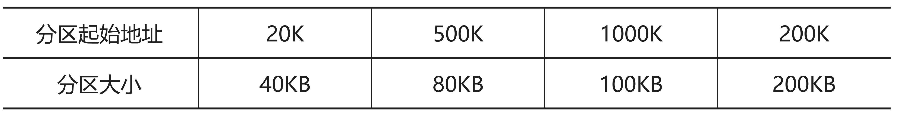

2017-01
算法和算法评价下列函数的时间复杂度是__。
int func(int n)
{
int i = 0, sum = 0;
while (sum < n)
sum += ++i;
return i;
}答案：B
本题讲解：循环执行次数与时间复杂度
答案：B（O(n^1/2)，即 n 的平方根量级）。
第零步：先立机制——这一轮循环到底在攒什么
复杂度由循环执行次数决定，而执行次数由 sum 的增长规律决定。每轮执行 sum += ++i：++i 先把 i 加 1，再加进 sum，所以第 1 轮加 1、第 2 轮加 2……第 k 轮加 k，第 k 轮结束时 sum = 1+2+…+k = k(k+1)/2（三角形数）。于是复杂度问题转化成：三角形数何时首次达到 n——循环退出时 k 是多少，执行次数就是多少。
| 轮数 k | 1 | 2 | 3 | 4 | 5 | 6 |
|---|---|---|---|---|---|---|
| 轮末 sum | 1 | 3 | 6 | 10 | 15 | 21 |
第一步：解出循环轮数
循环条件 sum < n：恰好执行 K 轮意味着 (K−1)K/2 < n ≤ K(K+1)/2，即第 K 轮把 sum 顶过 n。由 K(K+1)/2 ≥ n 得 K ≈ √(2n)。数值验证：n=100 时 K=14（14×15/2=105 首次 ≥ 100，√200≈14.1）；n=1000000 时 K=1414。
第二步：为什么记作 O(n^1/2) 而不是别的
T(n) ≈ √(2n) = √2·n^1/2。大 O 只保留增长最快的因子，常数因子直接吸收——√2 与 n 无关，量级由 n^1/2 决定 → O(n^1/2)。再排除其余选项：对数 log n 增长远慢于 n^1/2（n=10⁶ 时 log₂n≈20，而这里要走 1414 轮），A 不可能；n 与 nlog n 又明显偏大，C、D 排除。
易错点
- 只盯循环变量 i 的写法：i 最终约等于 √(2n) 而不是 n，按 O(n) 估就会误选 C。
- 被系数吓住：算出 √(2n) 后纠结"2n 不是 n"，忘记常数进不了大 O，在 B 与其他项之间摇摆。
- 忽略循环条件的位置：
while(sum < n)先判断再累加，退出时刻是"三角形数首次 ≥ n"。
一句话结论：第 k 轮攒到三角形数 k(k+1)/2，首次 ≥ n 时 k ≈ √(2n)；常数 √2 不影响量级，复杂度 O(n^1/2)。
2017-02
栈栈和队列的应用下列关于栈的叙述中，错误的是__。
I. 采用非递归方式重写递归程序时必须使用栈
II. 函数调用时，系统要用栈保存必要的信息
III. 只要确定了入栈次序，就可确定出栈次序
IV. 栈是一种受限的线性表，允许在其两端进行操作
答案：C
本题讲解：栈的概念辨析（找错误叙述）
答案：C（错误的是 I、III、IV，只有 II 正确）。
第零步：先立机制——栈为什么"恰好"能服务函数调用
栈的本质是操作端被锁死的线性表：只允许在栈顶插入（push）与删除（pop）。函数调用恰好需要"最后发生的事最先收拾"的顺序——最晚被调用的函数最先返回。所以系统把返回地址、参数、局部变量压入调用栈，返回时弹出，LIFO 与"后调用先返回"一一对应。这就是 II 正确的机制根源。
第一步：逐条判断
- I（错）：用栈保存信息是把递归改写为非递归的常用手段，但不是必须。像尾递归、简单递推（如阶乘的累乘形式）没有"回头再处理"的部分，可直接改写成循环，不需要栈。「必须」二字过于绝对。
- II（对）：即第零步的机制——调用栈的 LIFO 特性正好承接调用的嵌套次序。
- III（错）：入栈、出栈可以交错进行，出栈次序就不由入栈次序唯一决定。例：依次入 1、入 2、弹 2、弹 1、入 3、弹 3，出栈序列是 2、1、3；若全部入完再弹则得 3、2、1——同一入栈次序已有两种出栈结果。n 个元素依次入栈的合法出栈序列共 Catalan(n) 种（n=3 时 5 种）。
- IV（错）：栈只允许在一端（栈顶）插入和删除；允许两端操作的是双端队列。前半句"受限线性表"对，后半句"两端操作"错。
易错点
- 把"常用"当"必须"：栈能模拟递归，但无回溯需求的递归可直接迭代化，否则会漏判 I。
- 认为 III 对：只想到"全部入完再弹"这一种情形（那才唯一是逆序），忽略入栈出栈可交错、出栈序列多达 Catalan(n) 种。
- 认为 IV 对：混淆栈（单端操作）与双端队列（两端操作）。
一句话结论：II 正确；I、III、IV 错在绝对化表述、"只想到一种出栈情形"和概念混淆。
2017-03
数组和特殊矩阵适用于压缩存储稀疏矩阵的两种存储结构是__。
答案：A
本题讲解：稀疏矩阵的压缩存储结构
答案：A（三元组表和十字链表）。
第零步：先立机制——压缩的依据是"非零元远少于零元"
稀疏矩阵：非零元素很少且分布无规律。压缩的思路不是把零也存下来，而是只记非零元素"在哪、是什么"——行号、列号、值。凡是围绕这三个信息组织存储的结构，都是稀疏矩阵的压缩结构；反过来，凡是要为"全部位置"预留空间的，都与压缩背道而驰。
第一步：两种正选结构为什么合适
- 三元组表：每个非零元存成一个 (行, 列, 值) 三元组，顺序排列，另附行列维数与非零元个数。存储量正比于非零元个数而不是 m×n——这正是"压缩"的落点；结构简单，适合非零元位置稳定、只做存储与转置类运算的场合。
- 十字链表：每个非零元一个结点，同时挂在所在行的链表和所在列的链表上。为什么行、列各挂一次？因为矩阵加法这类运算既可能沿行找同类、又可能沿列找同类，两个方向都要能走；插入删除只改指针，适合非零元动态增删的场合。
第二步：排除干扰项——它们为什么不是压缩结构
- 邻接矩阵（B、D 含）：是图的存储结构，n 个顶点必须开 n×n 数组——空间由顶点数的平方决定，与"有几个非零元"无关；矩阵稀疏时大量格子存 0，恰恰是浪费，谈不上压缩。
- 二叉链表（C 含）：是二叉树的存储结构，与矩阵的行列结构毫无关系。
→ 含邻接矩阵的 B、D 与含二叉链表的 C 全部排除，选 A。
易错点
- 看到"矩阵"就联想"邻接矩阵"：邻接矩阵是图的概念，且它为所有顶点对预留空间，不压缩稀疏结构。
- 十字链表与二叉链表混淆：十字链表 = 行链＋列链，服务稀疏矩阵；二叉链表服务二叉树。
记忆锚点：稀疏矩阵压缩 = 三元组表（顺序、静态）＋十字链表（链式、动态）。
2017-04
二叉树的遍历和线索二叉树要使一棵非空二叉树的先序序列与中序序列相同，其所有非叶结点须满足的条件是__。
答案：B
本题讲解：先序序列与中序序列相同的条件
答案：B（所有非叶结点只有右子树）。
第零步：先立机制——两个序列"谁排在谁前面"由遍历定义决定
先序 = 根·左·右：根排在自己整棵子树之前。中序 = 左·根·右：左子树的结点排在根之前。两相对照：设某结点 v 带非空左子树，取左子树里任一结点 u——先序中 v 在 u 前（根先行），中序中 u 在 v 前（左子树先行）。同一个 v、u，两个序列的先后关系恰好相反，两序列必不相同。所以"先序 = 中序"要求树里任何一个结点都没有左子树。
第一步：验证右链确实逐位相同
所有非叶结点只有右子树时，整棵树退化成向右下延伸的一条链 N1→N2→N3：每层访问都"左空 → 访问根 → 进右孩子"，先序 = N1 N2 N3，中序 = N1 N2 N3，逐位相同 ✓。
第二步：为什么其他选项不行
| 树形 | 先序 | 中序 | 是否相同 |
|---|---|---|---|
| 只有右子树（右链） | N1 N2 N3 | N1 N2 N3 | ✓ |
| 只有左子树（左链） | N1 N2 N3 | N3 N2 N1 | ✗ 恰好相反 |
- A（只有左子树）：中序把最左下的叶子排最前，先序把根排最前，两序列正好相反——那是"先序与中序相反"的条件。
- C（度均为 1）：度 1 的结点可能只带左孩子，只要存在一个左孩子，第零步的反序关系就出现；"度均为 1"并不保证全是右孩子。
- D（度均为 2）：每个结点都有左子树，中序必然先输出左子树内容，更不可能相同。
易错点
- 从"第二位"入手比较：先序第二位是左子树之根，中序第二位是左子树最左下结点，两者在某些左链情形恰好相同，真正的分歧在"左子树结点相对祖先的先后"——机制要从遍历定义看。
- 对称结论记反：先序 = 中序 ⇔ 无左孩子（右链）；对称地，中序 = 后序 ⇔ 无右孩子（左链）。
一句话结论：先序让根领先于左子树、中序让左子树领先于根——两序列要相同，只能全树无左孩子，即所有非叶结点只有右子树。
2017-05
二叉树的遍历和线索二叉树已知一棵二叉树的树形如右图所示，其后序序列为 e, a, c, b, d, g, f，树中与结点 a 同层的结点是__。

答案：B
本题讲解：由后序序列＋树形反推结点层次
答案：B（与 a 同层的是 d）。
第零步：先立机制——后序"左·右·根"决定谁排最后
后序遍历中，任何结点都要等它的整棵子树输出完才轮到自己，所以序列最后一位一定是整棵树的根 f。同理，把 f 的左右子树切开之后，每段的末位就是该子树的根——后序的"末位定根"在每一层都成立。
第一步：按树形切分左右子树
切分位置不能猜，由题图决定：根有两个孩子，两个孩子各只带一个孩子，各孙子也各只带一个孩子，共 1+2+2+2 = 7 个结点，左右子树各 3 个。于是后序 e a c b d g f 切成：左子树 e a c，右子树 b d g。
第二步：单链子树自底向上定层
为什么单链的后序恰好是"从叶到根"？ 链上每层只有一个孩子，后序 = "孩子子树的后序 + 自己"，递归展开就是：叶子、叶子的父亲、……、子树根，逐层向上。所以左段 e a c → c（第 2 层，左子树根）、a（第 3 层）、e（第 4 层）；右段 b d g → g（第 2 层）、d（第 3 层）、b（第 4 层）。
| 层号 | 1 | 2 | 3 | 4 |
|---|---|---|---|---|
| 结点 | f | c、g | a、d | e、b |
第三步：回答问题并核对干扰项
a 在第 3 层，同层的只有 d → 选 B。其余三项为什么不对：f 是根（第 1 层）；c、g 在第 2 层——它们与 a 同在一条（子）链上却高一层，把"同子树/同链"误当"同层"，正是误选 C、D 的来源；f 则是最高的祖先。
易错点
- 跳过"树形定切分"这一步：不先由图确定左 3 右 3，后序就没法切，切错一段层次全错。
- 层次数错起点：根是第 1 层，a、d 在第 3 层而不是第 2 层。
- 混淆"同层"与"同子树"：c、g 与 a 同在半边子树里，但层号不同。
一句话结论：后序末位定根 → 树形定左右段 → 单链段后序自叶向根逐层读出，a、d 同在第 3 层。
2017-06
树与二叉树的应用已知字符集{a, b, c, d, e, f, g, h}，若各字符的哈夫曼编码依次是 0100, 10, 0000, 0101, 001, 011, 11, 0001，则编码序列 0100011001001011110101 的译码结果是__。
答案：D
本题讲解：哈夫曼编码的译码（前缀码切分）
答案：D（afeefgd）。
第零步：先立机制——前缀码为什么保证切分唯一
哈夫曼编码是前缀码：任一字符的编码都不是另一个编码的前缀。把编码看成 0/1 路标：0 走左、1 走右，从哈夫曼树根出发逐位走，只有走到叶子才停——中途任何位置都不可能是另一个字符的终点（否则就有编码成了别人的前缀）。所以从序列第 1 位起，读到叶子就译出一个字符、回到根重来，切分方式唯一，不存在歧义。
第一步：逐段切分
编码表：a=0100、b=10、c=0000、d=0101、e=001、f=011、g=11、h=0001。对编码序列 0100011001001011110101（22 位）：
- 0100 → a
- 011 → f
- 001 → e
- 001 → e
- 011 → f
- 11 → g
- 0101 → d
为什么 0100 只能是 a、不会拆出别的字符？ 0 开头的合法编码只有 0000、0001、001、0100、0101、011：逐位走到 01 时没有任何编码终止（001 差一位、0100/0101 还差两位、011 差一位），继续走到第四位恰好唯一命中 a——前缀码保证没有更短或更长的编码与它共享这整段前缀。
拼回去核对：0100 011 001 001 011 11 0101 = 0100011001001011110101，22 位恰好用完 ✓。译码结果 afeefgd → 选 D。
易错点
- 见 0 就急着断段：要读到"走到叶子"为止；提前断段会把后面的位串错位，得到 A、B、C 一类似是而非的串。
- 001 与 011 混淆：e=001、f=011，本题两者各出现两次，走树时只差一个分叉，顺序容易数错。
- 不核对总位数：切完必须恰好用完 22 位，多一位少一位都说明切错了。
一句话结论：前缀码 = 从根走树、到叶才切，本题译出 a f e e f g d。
2017-07
图的基本概念已知无向图 G 含有 16 条边，其中度为 4 的顶点个数为 3，度为 3 的顶点个数为 4，其他顶点的度均小于 3。图 G 所含的顶点个数至少是__。
答案：B
本题讲解：握手定理求最少顶点数
答案：B（11 个）。
第一步：度数守恒（握手定理）
无向图所有顶点的度数之和 = 2 × 边数 = 2 × 16 = 32（每条边给两个端点各贡献 1 度）。
第二步：算出"剩余度数"
3 个 4 度顶点占 3 × 4 = 12；4 个 3 度顶点占 4 × 3 = 12；合计 24。剩余 32 − 24 = 8 度，要由"度 < 3"的其余顶点承担。
第三步：让剩余顶点尽量少
要顶点数至少，就让每个剩余顶点度数顶格取 2：8 ÷ 2 = 4 个。总顶点数 = 3 + 4 + 4 = 11。（度序列 4,4,4,3,3,3,3,2,2,2,2 可以画出 16 条边的图，11 可以取到。）
易错点
- 把"其余顶点"按 1 度算：得 3+4+8 = 15，对应干扰项 D——"至少"问题要让度数尽量大，不是尽量小。
- 忘记 Σ度 = 2E：直接拿边数 16 当度数和，差一倍全盘错。
- 漏掉"至少"的方向：其余顶点度数取越小（如 1 度），顶点数只会更多，不是更少。
一句话结论：Σ度 = 32，已用 24，剩余 8 度按每点顶格 2 度分给 4 个顶点，共 11 个。
2017-08
顺序查找和折半查找下列二叉树中，可能成为折半查找判定树（不含外部结点）的是__。
答案：A
本题讲解：折半查找判定树的形态判据
答案：A。
第零步：先立机制——判定树由"取中点"逐层派生
折半查找每次取 mid，把当前区间分成"左半、mid、右半"，mid 就是判定树的一个结点，左右两半递归生成左右子树——判定树是查找过程的展开，形态只由表长决定，与元素取值无关。本题取 mid = ⌈(low+high)/2⌉（向上取整）：n 个结点的子树，mid 左边放 ⌈(n−1)/2⌉ 个、右边放 ⌊(n−1)/2⌋ 个。所以每个结点都必须满足判据——左子树结点数 = 右子树结点数，或恰好多 1（左 ≥ 右），且左右子树递归地满足同一条判据。
第一步：逐项验算（只看结构，不碰取值）
- A（10 个结点：1+2+4+3）：根左 5 右 4（5 = 4+1 ✓）；左半两个 5 结点子树各左 2 右 2 ✓；其下 2 结点子树均为左孩子（左 1 右 0）✓；右半 4 结点子树左 2 右 1 ✓；其下 2 结点子树左孩子 ✓。全程满足判据，正是 n=10 的判定树。
- B（11 个）：右半的两个 2 结点子树把独生孩子挂在右边（左 0 右 1），违反"左 ≥ 右" ✗。
- C（9 个）：左半 4 结点子树左 1 右 2，右子树反而多 ✗。
- D（10 个）：根就左 4 右 5，方向反了 ✗。
第二步：结论
只有 A 能从头到尾满足同一条划分规则 → 选 A。
易错点
- 只数总结点数：A、D 都是 10 个结点，必须看左右子树的划分方向才能区分。
- 判据方向与取整规则不配套：向上取整版是"左 ≥ 右、至多多 1"；若换向下取整
mid=⌊(low+high)/2⌋，独生孩子该挂右边，判据变成"右 ≥ 左"。同一套推导里规则必须统一，逐结点验算方向不能变。
一句话结论：判定树 = 对半分过程的展开，n 个结点时 ⌈(n−1)/2⌉ 个放左、⌊(n−1)/2⌋ 个放右，逐结点验算"左 ≥ 右"即可锁定 A。
2017-09
B树和B+树下列应用中，适合使用B+树的是__。
答案：B
本题讲解：B+ 树的适用场景
答案：B（关系数据库系统中的索引）。
第一步：回忆 B+ 树的特征
- 多路平衡查找树，一个结点容纳多个关键字 → 扇出大、树矮，磁盘 I/O 次数少；
- 全部记录（卫星数据）都存放在叶子层，叶子结点用链表串成有序链表；
- 天然支持范围查询与顺序遍历。
第二步：逐项匹配场景
- B 关系数据库索引：数据量大、存磁盘、按主键等值查询与范围查询频繁——与 B+ 树特征一一对应（MySQL InnoDB 的索引就是 B+ 树）✓。
- A 编译器词法分析：用有穷状态自动机（DFA）逐字符识别单词，与 B+ 树无关 ✗。
- C 路由表快速查找：核心是最长前缀匹配，用 Trie（线索/前缀树）等结构 ✗。
- D 磁盘空闲块管理：用位图或空闲链表即可 ✗。
易错点
- 只记得"B 树家族"就乱选：要抓 B+ 树"叶子有序链表＋范围查询＋磁盘友好"这三个卖点。
- 各场景的专用结构要能对号入座：词法分析→DFA，路由查找→Trie，空闲块→位图/链表。
记忆锚点：B+ 树 = 数据库索引标配。
2017-10
各种内部排序算法的比较及应用在内部排序时，若选择了归并排序而没有选择插入排序，则可能的理由是__。
I. 归并排序的程序代码更短． II. 归并排序的占用空间更少
III. 归并排序的运行效率更高
答案：B
本题讲解：为什么选归并而不选插入排序
答案：B（仅 III）。
第零步：先立机制——两种排序的"结构"决定了一切
插入排序：双重循环、原地搬移，代码短、辅助空间 O(1)，工作量正比于逆序对数，基本有序时最好 O(n)，平均 O(n²)。归并排序：递归对半分 + O(n) 辅助数组 + 逐层线性合并，层数 log n、每层合并 Θ(n)，所以任何输入都是 O(n log n)。三条理由的对错，全部可以从这个结构差异推出来。
第一步：逐条审查
- I 归并代码更短：错。归并要写递归划分、辅助数组分配与合并三个部分，代码比"一个双重循环"的插入排序长；插入排序才是以短小著称的那个。
- II 归并占用空间更少：错。归并必须开 O(n) 辅助数组存放合并结果；插入排序原地排序、辅助空间 O(1)。空间账恰好说反——归并是用空间换时间。
- III 归并运行效率更高：对。为什么归并与初始序列无关也稳定在 O(n log n)？ "对半分"不看数据内容，划分层数恒为 log n，每层合并恒为 Θ(n)；而插入排序的工作量随逆序对数波动，规模大时 O(n log n) 与 O(n²) 差距悬殊。
第二步：下结论
站得住脚的理由只有 III → 选 B。
易错点
- 只背复杂度忘了空间账：归并 O(n log n) 是拿 O(n) 辅助数组换来的，II 恰好说反。
- 忽略"代码长度"也是比较项：I 说反了——插入排序才以"短"著称。
- 以为归并快是因为"数据好"：归并的高效来自分治结构本身，与初始序列无关，这正是 III 成立的关键。
一句话结论：归并 = 代码更长、空间更多、效率更高且与初序无关；能当理由的只有效率这一条。
2017-11
各种内部排序算法的比较及应用下列排序方法中，若将顺序存储更换为链式存储,则算法的时间效率会降低的是__。
I. 插入排序 II. 选择排序 III. 起泡排序 IV. 希尔排序 V. 堆排序
答案：D
本题讲解：换链式存储后哪些排序会变慢
答案：D（仅 IV、V）。
第一步：链表损失了什么
顺序存储换链式存储，损失的是按下标随机存取的能力，只剩顺序访问。凡是依赖"按序号直接定位"的算法都会掉速；只靠顺序扫描的比较类算法不受影响。
第二步：逐个算法过一遍
- I 插入排序：在已排序部分里边找边插，顺序访问即可完成，链表插入还免去搬移元素 → 不降。
- II 选择排序：每趟从头到尾顺序扫描找最值 → 不降。
- III 起泡排序：相邻元素两两比较，天然顺序访问 → 不降。
- IV 希尔排序：按增量 d 分组做插入排序，要访问 i、i+d、i+2d…，必须按下标跳着取 → 降。
- V 堆排序：建堆与筛选按完全二叉树下标 i 与 2i、2i+1 随机定位 → 降。
第三步：下结论
效率降低的是 IV、V → 选 D。
易错点
- 以为带"插入"的都吃亏：链表的插入排序反而不必移动元素。
- 忽略希尔排序的本质：它是"分组插入"，分组靠下标跳访，链表做不到。
一句话结论：链表毁掉的只有"按下标跳着取"的希尔与堆。
2017-12
计算机的性能指标假定计算机 M1 和 M2 具有相同的指令集体系结构（ISA），主频分别为 1.5GHz 和 1.2GHz。在M1 和 M2 上运行某基准程序 P，若平均 CPI 分别为 2 和 1，则程序 P 在 M1 和 M2 上运行时间的比值是__。
答案：C
本题讲解：主频与 CPI 如何折算运行时间
第一步：写出运行时间公式
两机 ISA 相同，程序 P 的指令条数 IC 相同，运行时间只差在"每条指令花多久"：
T = IC × CPI × 时钟周期 = IC × CPI ÷ 主频
| 机器 | 主频 | 平均 CPI | 每条指令耗时 |
|---|---|---|---|
| M1 | 1.5 GHz | 2 | 2 ÷ 1.5G ≈ 1.33 ns |
| M2 | 1.2 GHz | 1 | 1 ÷ 1.2G ≈ 0.83 ns |
第二步：求比值
T(M1) : T(M2) = (2/1.5) : (1/1.2) = (2 × 1.2) : (1.5 × 1) = 2.4 : 1.5 = 1.6。
直觉检验：每秒执行指令数 M1 = 1.5G ÷ 2 = 0.75G 条，M2 = 1.2G ÷ 1 = 1.2G 条。M2 反而更快，所以 M1 耗时是 M2 的 1.2 ÷ 0.75 = 1.6 倍，与比值一致。
第三步：结论
程序 P 在 M1 与 M2 上运行时间之比为 1.6，答案：C。
易错点
- 只比主频：以为 1.5 GHz 一定快，忽略 M1 的 CPI 大一倍，M2 每秒完成的指令更多。
- 比值放反：算成 T(M2) : T(M1) = 0.625 会误选 B；题干问的是"M1 和 M2 上运行时间的比值"，M1 在前。
- 漏掉一个因子：只拿主频比或只拿 CPI 比会得出 A、D 一类的数。
记忆锚点：T = IC × CPI / f，高主频不等于高性能，还要看 CPI。2017-13
浮点数的表示与运算主存储器某计算机主存按字节编址，由 4 个 64M×8 位的 DRAM 芯片采用交叉编址方式构成，并与宽度为 32 位的存储器总线相连，主存每次最多读写 32 位数据。若 double 型变量 x 的主存地址为 804 001AH，则读取 x 需要的存储周期数是__。
答案：C
本题讲解：交叉编址主存读取 double 的存储周期数
第一步：定位 x 的 8 个字节
主存按字节编址，4 个 64M×8 位芯片低位交叉编址：地址低 2 位选芯片（芯片号 = 地址 mod 4），每个芯片一次读出 1 字节。double 占 8 字节，首地址 804001AH，末地址 8040021H。
| 字节 | 1A | 1B | 1C | 1D | 1E | 1F | 20 | 21 |
|---|---|---|---|---|---|---|---|---|
| 芯片号 | 2 | 3 | 0 | 1 | 2 | 3 | 0 | 1 |
第二步：确定一个周期能读多少
4 个芯片共用地址总线的高位地址：一个存储周期里各芯片只能各读出"高位地址相同"的那 1 个字节，拼成一个对齐的 4 字节组（32 位）。对齐组为 8040018H～1BH、804001CH～1FH、8040020H～23H。
| 存储周期 | 读出的对齐组 | 属于 x 的字节 |
|---|---|---|
| 1 | 8040018H～1BH | 1A、1B |
| 2 | 804001CH～1FH | 1C、1D、1E、1F |
| 3 | 8040020H～23H | 20、21 |
第三步：合计
x 的 8 个字节横跨 3 个对齐组，需 3 个存储周期，答案：C。
易错点
- 按"任意 4 字节都能一次读"算成 2：以为 1A～1D、1E～21 各读一次即可，忽略了交叉编址下 4 个芯片共享高位地址，同一周期只能读出一个对齐的 4 字节组。
- 芯片号算错：1AH 的低 2 位是 10B（芯片 2），要看二进制的最低两位。
- 忘了 double 占 8 字节：按 4 字节算就会少一个周期。
记忆锚点：低位交叉编址一次并行读出的 32 位一定是对齐的 4 字节组；起始地址未对齐就要多花周期。
2017-14
高速缓冲存储器某 C 语言程序段如下：
for (i = 0; i <= 9; i++) {
temp = 1;
for (j = 0; j <= i; j++)
temp *= a[j];
sum += temp;
}下列关于数组 a 的访问局部性的描述中，正确的是__。
答案：A
本题讲解：二重循环访问数组的局部性判断
第一步：分清两种局部性
时间局部性：刚被访问的数据很快又被再次访问；空间局部性：与其相邻地址的数据被顺序访问。代码中外层 i 控制轮数，内层 j 从 0 扫到 i，依次访问 a[j]。
第二步：分别找证据
| 外层轮次 | 内层访问序列 | 体现的局部性 |
|---|---|---|
| i=0 | a[0] | 首次访问 |
| i=1 | a[0]、a[1] | a[0] 重访 = 时间；a[1] 紧跟 a[0] = 空间 |
| i=2 | a[0]、a[1]、a[2] | 前两个重访 = 时间；a[2] 顺序后延 = 空间 |
- 内层循环对
a[0..i]按下标递增连续扫描 → 空间局部性。 - 外层每加 1，上一轮刚访问过的
a[0..i]又被完整重扫一遍 → 时间局部性。
第三步：结论
两种局部性皆有，答案：A。
易错点
- 只看内层顺序访问：漏掉跨外层循环的重复访问，会误选 B（无时间局部性）。
- 只看重复访问：漏看内层的连续扫描，会误选 C。
- 混淆定义：时间局部性看"同一数据重复用"，空间局部性看"相邻地址顺序用"。
记忆锚点：顺序扫描给空间局部性，重复扫描给时间局部性，本程序两样都占。
2017-15
指令的寻址方式下列寻址方式中，最适合按下标顺序访问一维数组元素的是__。
答案：D
本题讲解：哪种寻址方式适合按下标顺序访问数组
第一步：抓住"数组 + 下标"的特征
一维数组元素地址 = 数组首地址 + 下标 × 元素长度。理想的寻址方式应做到"首址固定、下标自动变化"，只改下标就能顺序遍历。
第二步：逐项分析
- 相对寻址：EA = (PC) + A，基准是当前指令位置，面向程序转移与代码浮动，与数组下标无关。
- 寄存器寻址：操作数就在寄存器里，不生成访存地址，谈不上按地址扫数组。
- 直接寻址：EA = A 地址写死在指令中，每换一个下标就要换一条指令。
- 变址寻址：EA = (IX) + A，形式地址 A 指向数组首地址，变址寄存器 IX 存下标；IX 加 1 即访问下一元素，最适合数组与循环程序。
第三步：结论
只有变址寻址做到"首址放指令、下标放寄存器"，答案：D。
易错点
- 与相对寻址混淆：两者都是"基址加偏移"，但基准不同——相对寻址基准是 PC（面向程序位置），变址寻址基准是用户设定的数组首址（面向数据）。
- 忽略题眼"按下标顺序"：关键词是下标可变、首址固定，这正是变址寄存器的用途。
记忆锚点：数组/循环用变址寻址，程序转移/浮动用相对寻址。
2017-16
指令系统某计算机按字节编址，指令字长固定且只有两种指令格式，其中三地址指令 29 条，二地址指令 107 条，每个地址字段为 6 位，则指令字长至少应该是__。
答案：A
本题讲解：两种指令格式推最小指令字长
第一步：摆清位分配
设指令字长 L 位，地址字段各 6 位：三地址格式操作码占 L−18 位，二地址格式操作码占 L−12 位（恰好比三地址多出一个地址字段的位置）。
第二步：三地址指令的空间需求
29 条三地址指令需要 2^(L−18) ≥ 29，操作码至少 5 位（2^5 = 32 ≥ 29），理论最短 L = 5 + 18 = 23 位。
第三步：二地址指令靠扩展操作码补齐
三地址用剩 32 − 29 = 3 个操作码前缀，每个前缀再接 6 位编码，可扩展 3 × 64 = 192 条二地址指令 ≥ 107，够用。
第四步：按字节对齐取整
机器按字节编址、指令按字节存放，指令字长应为 8 的倍数：23 位向上取整为 24 位。验证 L = 24：三地址码空间 2^6 = 64 ≥ 29，剩余 35 × 64 = 2240 ≥ 107，全部满足且最省。
结论：指令字长至少 24 位，答案：A。
易错点
- 忘了字节对齐：算出 5 + 18 = 23 位就直接下结论，23 不在选项中，且按字节编址指令字长须是字节的整数倍。
- 以为二地址要另占操作码空间：扩展操作码正是复用三地址没用掉的前缀，不必再加长。
- 把"至少"当成"任选一个满足的"：26、28、32 位也能编码，但不是最小值。
记忆锚点：操作码位数看条数（2 的 k 次方 ≥ 条数），字长 = 操作码 + 地址字段，最后向上取整到字节边界。
2017-17
指令流水线下列关于超标量流水线特性的叙述中，正确的是__。
I. 能缩短流水线功能段的处理时间
II. 能在一个时钟周期内同时发射多条指令
III. 能结合动态调度技术提高指令执行并行性
答案：C
本题讲解：超标量流水线的三个论断
第一步：先明确超标量是什么
超标量流水线 = 处理器内配置多条流水线、多个功能部件，在一个时钟周期内发射并执行多条指令。它改变的是"每拍发射几条"（宽度），不改变单条指令在各功能段里的处理时间（深度）。
第二步：逐条判断
- I 错："能缩短流水线功能段的处理时间"——功能段时间由电路延迟与时钟周期决定，超标量缩短不了它；把段切得更细、靠提高主频提速的是超流水线。
- II 对："能在一个时钟周期内同时发射多条指令"，这正是超标量的定义。
- III 对："能结合动态调度技术提高指令执行并行性"，超标量常与动态调度（乱序执行、记分牌、Tomasulo 等）配合挖掘指令级并行。
第三步：结论
仅 II、III 正确，答案：C。
易错点
- 把"多条流水线并行"当成"段处理时间变短"：误选含 I 的 B 或 D。
- 混淆超标量与超流水线：超标量管空间宽度（一次几条），超流水管时间深度（段更细、主频更高）。
记忆锚点：超标量 = 每拍多发射（II）+ 可配合动态调度（III），不缩短功能段时间（I 错）。
2017-18
主存储器控制器的功能和工作原理下列关于主存储器（MM）和控制存储器（CS）的叙述中，错误的是__。
答案：B
本题讲解：主存 MM 与控制存储器 CS 的对比
答案：B（"MM 按地址访问，CS 按内容访问"错误）。
第零步：先立机制——控存是微程序控制器的"程序存放处"
采用微程序控制的 CPU 里，每条机器指令对应一段微程序，微程序由一串微指令组成，存放在 CPU 内部的控制存储器（CS）中。执行指令时，微地址寄存器给出微地址，从控存按微地址逐条取出微指令、发出微操作控制信号——微程序是顺序执行的，所以控存和主存一样按地址访问，只是这个地址叫"微地址"。控存内容出厂固化、只读不写，故用 ROM 实现。主存 MM 在 CPU 外、按主存地址访问、存指令和数据，用 RAM 和 ROM 实现。
第一步：对号入座
| 维度 | 主存 MM | 控存 CS |
|---|---|---|
| 位置 | CPU 外 | CPU 内（微程序控制器中） |
| 存放内容 | 指令和数据 | 微指令（微程序） |
| 访问方式 | 按地址访问 | 按微地址访问 |
| 实现介质 | RAM 和 ROM | ROM |
A、C、D 与上表逐项相符；B 说"CS 按内容访问"——错。控存里的微指令按微地址顺序取出；"按内容访问"是相联存储器（CAM）的特征（TLB、Cache 标记比较用它），张冠李戴正是 B 的设错点。
易错点
- 把"按内容访问"安到控存头上：微程序顺序执行、给微地址取微指令，不需要也不存在按内容匹配。
- 以为 CS 也在 CPU 外：控存属于微程序控制器，位于 CPU 内部，程序员不能访问。
记忆锚点：控存 = CPU 内、ROM、存微指令、按微地址访问；"按内容访问"是相联存储器的专利。
2017-19
数据通路的功能和基本结构下列关于指令流水线数据通路的叙述中，错误的是__。
答案：A
本题讲解：流水线数据通路的组成边界
第一步：划清"数据通路"与"控制器"
数据通路 = 数据在 CPU 内流经的部件与路径：ALU、通用寄存器组、取指部件、内部总线、各级流水段寄存器等。控制器（生成控制信号的控制部件）不属于数据通路：它发出控制信号指挥数据通路工作，二者是"指挥与被指挥"的关系。
第二步：逐项核对
- A："包含生成控制信号的控制部件"——错，那是控制器，不在数据通路里。
- B：ALU 是数据通路的核心运算部件，正确。
- C：通用寄存器组、取指部件（PC 与取指逻辑）都在数据通路中，正确。
- D：数据通路既有组合逻辑（运算、译码路径），又有时序逻辑（寄存器打拍），组合而成，正确。
第三步：结论
错误的叙述是 A，答案：A。
易错点
- 把控制器算进数据通路：CPU = 数据通路 + 控制器，但"生成控制信号的控制部件"属于后者。
- 忽略取指部件：取指部件也在数据通路里，C 的说法其实正确。
记忆锚点：数据通路管"数据怎么流"，控制器管"发什么控制信号"。
2017-20
总线概述总线事务和定时下列关于多总线结构的叙述中，错误的是__。
答案：D
本题讲解：多总线结构特性与 PCI-Express 的传输方式
答案：D（"PCI-Express×16 采用并行传输方式"错误）。
第零步：先立机制——总线为什么要分层次
CPU、主存、高速设备与低速设备速度相差悬殊：把所有设备挂在同一条总线上，最慢的设备会拖低整条总线的时序。所以采用分层多总线：越靠近 CPU 的总线越快（存储器总线最快），越往外越慢，让设备"各得其所"；不同总线的协议、时序、速率都不同，必须通过桥接器相连，由桥完成信号、协议与速度的转换；存储器总线还支持突发（burst）传送——给出一个首地址后连续传送一串数据，正合主存成块访问（如填充缓存行）的规律。
第一步：逐项核对
- A 对：靠近 CPU 的总线速度快，这是分层设计的初衷。
- B 对：存储器总线支持突发传送（一次给出首地址、连续读出一串数据）。
- C 对：总线之间必须通过桥接器相连（原因见第零步）。
- D 错：为什么 ×16 不是并行？ PCI-Express 是串行点对点标准，×16 指 16 条 lane（通道），每条 lane 都是独立的串行差分线路对，数据在 lane 内逐位串行传输；并行传输是传统 PCI/ISA 共享总线的方式。
第二步：结论
错误的叙述是 D，选 D。
易错点
- 被"×16"迷惑：×16 是 16 条串行 lane，不是 16 位并行总线。
- 混淆 PCI 与 PCI-Express：PCI = 并行共享总线；PCIe = 串行点对点，靠 lane 数扩展带宽。
记忆锚点：分层总线 = 近快远慢 + 桥接转换；PCIe = 串行，lane 数只是通道条数。
2017-21
I/O接口I/O指令实现的数据传送通常发生在__。
答案：D
本题讲解：I/O 指令实现的数据传送发生在谁和谁之间
第一步：理清三个对象
I/O 设备（机械与电子部分）→ I/O 接口（其中的可访问寄存器称为 I/O 端口）→ CPU。CPU 执行 I/O 指令（IN/OUT）时只能与端口打交道：IN 把端口内容读入通用寄存器，OUT 把通用寄存器内容写入端口。设备与端口之间的数据交换由接口硬件完成，不是 I/O 指令的直接任务。
第二步：逐项排除
- A："I/O 设备和 I/O 端口之间"——由接口内部硬件完成，CPU 指令管不到。
- B："通用寄存器和 I/O 设备之间"——CPU 不能越过接口直接访问设备，必须经过端口。
- C："I/O 端口和 I/O 端口之间"——端口之间不直接互相传送。
- D："通用寄存器和 I/O 端口之间"——正是 IN/OUT 指令完成的传送。
第三步：结论
答案：D。
易错点
- 以为 I/O 指令直达设备：CPU 与设备之间一定隔着接口/端口这一层。
- 混淆"I/O 端口"与"I/O 设备"：端口是接口中供 CPU 访问的寄存器，设备是外设本身。
记忆锚点：CPU ↔ 端口 ↔ 设备，I/O 指令只负责"通用寄存器 ↔ 端口"这一段。
2017-22
异常和中断机制I/O方式下列关于多重中断系统的叙述中，错误的是__。
答案：B
本题讲解：多重中断系统中"关中断"的位置
第一步：明确多重中断的含义
多重中断 = 中断嵌套：处理一个中断服务程序的过程中，若出现更高级别的中断请求，可以暂停当前服务程序、转去响应更高级的中断。嵌套成立的前提是：中断处理程序在保存现场之后必须开中断。
第二步：逐项核对
- A 对：CPU 在一条指令执行结束时采样并响应中断。
- B 错：说"中断处理期间 CPU 处于关中断状态"——若全程关中断，更高级请求永远进不来，嵌套无从谈起。关中断只应存在于"保存现场、设置屏蔽字"等临界区，之后必须开中断。
- C 对：外中断请求由外设随机产生，与当前指令的执行无关。
- D 对：CPU 通过在指令执行结束时采样中断请求信号来检测中断。
第三步：结论
错误的叙述是 B，答案：B。
易错点
- 把单级中断的"处理期间关中断"套到多重中断：单级中断可以全程关中断，多重中断必须开中断才能嵌套。
- 忘记处理流程中开关中断的交替：响应 → 关中断、保护现场/设屏蔽字 → 开中断 → 执行服务 → 关中断、恢复现场 → 开中断返回。
记忆锚点：多重中断的关键就是"处理期间开中断"。
2017-23
CPU调度假设4个作业到达系统的时刻和运行时间如下表所示。
| 作业 | 到达时刻 t | 运行时间 |
|---|---|---|
| J₁ | 0 | 3 |
| J₂ | 1 | 3 |
| J₃ | 1 | 2 |
| J₄ | 3 | 1 |
系统在 t=2 时开始作业调度。若分别采用先来先服务和短作业优先调度算法，则选中的作业分别是__。
答案：D
本题讲解：t=2 作业调度，FCFS 与 SJF 各选中谁
第一步：先圈定"已到达"的作业
作业调度发生在 t=2，此时只有到达时刻不晚于 2 的作业才有资格被选中：J₁（t=0）、J₂（t=1）、J₃（t=1）。J₄ 要到 t=3 才到达，本轮直接出局。
第二步：先来先服务（FCFS）看到达时刻
FCFS 按到达先后排队：J₁(0) → J₂(1) → J₃(1)。队头是到达最早的 J₁，所以 FCFS 选中 J₁。
第三步：短作业优先（SJF）看运行时间
SJF 在已到达的作业里挑运行时间最短的：J₁=3、J₂=3、J₃=2。最短的是 J₃，所以 SJF 选中 J₃。
易错点
- 把 J₄ 算进候选：J₄ 运行时间虽最短（1），但 t=2 时还没到达；把 SJF 选成 J₄ 会掉进 B（J1、J4）或 C（J2、J4）。
- 混淆两种算法的依据：FCFS 按到达时刻排队而不是按运行时间；若把 FCFS 也按"最短"处理或让两个算法选同一个作业，都对不上任何选项。
- 忽略调度开始时刻：必须以
t=2的已到达集合为准，提前或推后调度时刻都会得出错误组合（如误选 A）。
答案：D。先筛"已到达"，再看算法关键字：FCFS 看到达时刻，SJF 看运行时间。
2017-24
操作系统的运行环境执行系统调用的过程包括如下主要操作：
①返回用户态
②执行陷入（trap）指令
③传递系统调用参数
④执行相应的服务程序
正确的执行顺序是__。
答案：C
本题讲解：系统调用的执行顺序
第一步：分清用户态与内核态两段
系统调用是用户程序请求内核服务的过程：参数准备与陷入指令在用户态执行，服务程序在内核态执行，最后返回用户态继续原程序。
第二步：按因果链排序
③传递系统调用参数：先在用户态把系统调用号和参数放进约定的寄存器/栈，内核才知道"要干什么"；②执行陷入（trap）指令：陷入指令引发访管中断，CPU 由用户态转入核心态；④执行相应的服务程序：进入内核后，按调用号执行对应的内核服务例程；①返回用户态：服务完成后返回断点，继续执行用户程序。
第三步：对照选项
正确顺序为 ③→②→④→①，即 C。
易错点
- 先陷入后传参（对应 A、B）：参数必须先备好，陷入后内核才能取用——"先准备，再进门"。
- 把返回放在服务程序之前（对应 D）：④ 在内核里执行，① 是执行完服务后的"退场"动作，两者顺序不能颠倒。
答案：C（③→②→④→①）。记忆链条：传参 → 陷入 → 服务 → 返回，用户态进出各一次。
2017-25
内存管理概念某计算机按字节编址，其动态分区内存管理采用最佳适应算法，每次分配和回收内存后都对空闲分区链重新排序。当前空闲分区信息如下表所示。

回收起始地址为 60K、大小为 140KB 的分区后，系统中空闲分区的数量、空闲分区链第一个分区的起始地址和大小分别是__。
答案：B
本题讲解：最佳适应下的分区回收与合并
第一步：列出回收前的空闲分区（按大小升序）
最佳适应每次操作后都按分区大小升序重排空闲分区链。回收前 4 个空闲分区：40KB@20K、80KB@500K、100KB@1000K、200KB@200K。
第二步：找回收分区的"前后邻居"
回收区为 60K～200K（起始 60K、大小 140KB）：
- 前邻：20K～60K 的 40KB 空闲分区，末地址恰为 60K，可合并；
- 后邻：200K～400K 的 200KB 空闲分区，首地址恰为 200K，可合并；
- 500K 与 1000K 的分区与回收区不相接（400K～500K 是已分配区），保持独立。
第三步：合并并升序重排
三区合一为 20K～400K，大小 = 40 + 140 + 200 = 380KB，起始地址 20K。空闲分区变为 3 个：380KB@20K、80KB@500K、100KB@1000K。按大小升序重排：80KB@500K → 100KB@1000K → 380KB@20K，故链首分区起始地址 500K、大小 80KB。
易错点
- 漏掉一侧邻居：只与后邻合并得 200KB+140KB=340KB 的分区，只与前邻合并得 180KB（对应 C）。
- 忘记按大小升序重排：按地址排会把 20K 放链首（对应 A）。
- 误判相邻：合并只看地址是否连续（20K~60K + 60K~200K + 200K~400K），与分区大小无关。
答案：B（3 个分区；链首 500K、80KB）。
2017-26
文件系统某文件系统的簇和磁盘扇区大小分别为 1KB 和 512B。若一个文件的大小为 1026B，则系统分配给该文件的磁盘空间大小是 ___。
答案：D
本题讲解：按簇分配的磁盘空间计算
答案：D（2048B）。
第零步：先立机制——为什么分配单位是簇而不是扇区
文件系统记录"哪些空间属于哪个文件"时，若按 512B 扇区逐一登记，表项数量和管理开销都会暴涨。折中办法是把连续若干个扇区打包成簇（本题簇 = 1KB = 1024B，含 2 个 512B 扇区），以簇为最小分配单位，文件系统只按簇记账。代价是簇内碎片——文件没用满的最后一簇照样整簇占着。所以分配空间 = 文件大小向上取整到簇大小的整数倍，与文件的实际字节数、扇区数都无关；再小的文件也至少占 1 簇。
第一步：算文件需要几簇
文件 1026B：第 1 簇装 1024B，剩下 2B 进入第 2 簇 → 共需 1026/1024 向上取整 = 2 簇。
第二步：换算分配空间
2 × 1024B = 2048B。第 2 簇只用了 2B，浪费的 1022B 就是簇内碎片——这正是"为什么不能按 1026B 分"的机制根源。
易错点
- 按文件实际大小选 A（1026B）：把"用多少算多少"套到磁盘上，忽略了分配单位是整簇。
- 按扇区凑数选 B/C（1536B、1538B）：拿 512B 扇区往上拼。扇区是磁盘的物理读/写单位，逻辑分配单位是簇，两者不能混。
- 忘了"至少 1 簇"：哪怕只超 1 字节，也要多占一整簇。
一句话结论：分配空间 = ⌈文件大小/簇大小⌉ × 簇大小 = 2 × 1024B = 2048B，多出的 1022B 是簇内碎片。
2017-27
CPU调度下列有关基于时间片的进程调度的叙述中，错误的是 ___。
答案：B
本题讲解：时间片轮转调度中的状态转换（找错误项）
第一步：抓住"时间片用完"这一事件
时间片耗尽意味着进程没有运行完就被剥夺 CPU——它并未等待任何事件，随时可以继续运行。这个语义决定了它该回哪个队列。
第二步：逐项核对
- A：时间片越短，单个进程越频繁被剥夺 CPU，切换次数越多，每次保存/恢复现场的开销累积起来就越大——正确。
- B：时间片用完应转为就绪态（重新排队等待下一次调度），而不是阻塞态；阻塞态是进程等待 I/O 等事件时才进入的。B 错误，正是答案。
- C：每次时钟中断都会把当前进程的剩余时间片减 1（修改剩余时间），减到 0 才触发切换——正确。
- D：时间片大小要权衡响应时间、切换开销、就绪进程数量等因素——正确。
易错点
- 混淆"就绪"与"阻塞"：这是本题唯一的坑。判断方法：失去 CPU 但"万事俱备"→ 就绪态；还要等事件或资源 → 阻塞态。
- 以为时钟中断只管切换：中断处理里还要维护时间片计数，C 项就是考这一点。
答案：B。时间片用完：执行态 → 就绪态；进程主动等事件：执行态 → 阻塞态。
2017-28
操作系统发展历程与单道程序系统相比，多道程序系统的优点是 ___。
I. CPU利用率高
II. 系统开销小
III. 系统吞吐量大
IV. I/O设备利用率高
答案：D
本题讲解：多道程序系统相对单道程序的优点
第一步：抓住多道程序的本质
内存中同时驻留多道作业，CPU 与 I/O 设备并行工作：一个作业等 I/O 时，CPU 立即转去运行另一道作业。它的全部优点都来自这一机制。
第二步：逐项判断
- I. CPU 利用率高：CPU 不再空等 I/O，几乎总有作业可运行——是优点。
- II. 系统开销小：多道程序需要进程管理、内存保护、切换与同步互斥等，开销反而增大——不是优点。
- III. 系统吞吐量大：CPU 与设备并行，单位时间完成的作业数明显增多——是优点。
- IV. I/O 设备利用率高：设备可与 CPU 并行，并为更多作业服务——是优点。
第三步：组合选项
正确的组合是仅 I、III、IV，即 D。
易错点
- 误选 II（对应 A、C）：多道程序"提高资源利用率"不等于"减少系统开销"，管理复杂度上升，开销变大。
- 漏掉 IV（对应 B）：I/O 设备利用率提高正是多道程序的重要优点，不能丢。
答案：D（仅 I、III、IV）。多道程序"三高"：CPU 利用率、吞吐量、设备利用率都高，唯独系统开销更高。
2017-29
文件系统磁盘和固态硬盘下列选项中，磁盘逻辑格式化程序所做的工作是 ___。
I. 对磁盘进行分区
II. 建立文件系统的根目录
III. 确定磁盘扇区校验码所占位数
IV. 对保存空闲磁盘块信息的数据结构进行初始化
答案：B
本题讲解：磁盘初始化三阶段中"逻辑格式化"的职责
第一步：理清磁盘使用的三个阶段
- 低级（物理）格式化：划分扇区，确定扇区内部布局（数据区、校验码位数等）；
- 分区：把磁盘划分为若干逻辑卷；
- 逻辑（高级）格式化：在分区上建立文件系统。
题眼是：逻辑格式化具体做哪些事。
第二步：逐项归位
- I. 对磁盘进行分区：分区是逻辑格式化之前的独立步骤，不属于它。
- II. 建立文件系统的根目录：逻辑格式化要创建根目录及文件系统元数据——属于。
- III. 确定磁盘扇区校验码所占位数：扇区级细节由低级（物理）格式化确定——不属于。
- IV. 对保存空闲磁盘块信息的数据结构初始化：如空闲块位示图、空闲块链，由逻辑格式化初始化——属于。
易错点
- 把分区算进逻辑格式化（对应 D）：分区在前，逻辑格式化在后，顺序不能混。
- 把校验码归给逻辑格式化（对应 C）：那是物理格式化划分扇区时定的事。
答案：B（仅 II、IV）。逻辑格式化只做"搭文件系统骨架"：根目录 + 空闲块管理结构。
2017-30
文件系统基础某文件系统中，针对每个文件，用户类别分为4类：安全管理员、文件主、文件主的伙伴、其他用户；访问权限分为5种：完全控制、执行、修改、读取、写入。若文件控制块中用二进制位串表示文件权限，为表示不同类别用户对一个文件的访问权限，则描述文件权限的位数至少应为 ___。
答案：D
本题讲解：文件权限位串的位数计算
第一步：理解"位串"模型
FCB 中用二进制位串表示权限，每个二进制位是一个开关：表示"某类用户对某文件是否具有某种权限"。位数 = 用户类别数 × 权限种数。
第二步：两个维度分别计算
- 权限维度：5 种权限（完全控制、执行、修改、读取、写入）→ 每类用户需要 5 位；
- 用户维度：4 类用户（安全管理员、文件主、文件主的伙伴、其他用户）→ 共 4 × 5 = 20 位。
第三步：对照干扰项
- 5（A）：只描述了 1 类用户的权限，其余 3 类无位可放；
- 9（B）、12（C）：常见 Unix 的 9 位模型是"3 类用户 × rwx 3 种权限"，本题是 4 类 × 5 种，套用旧模型必然出错。
易错点
- 只数权限不数用户：权限位串要按"每类用户各一套"展开，漏乘 4 就选错。
- 套用 Unix 9 位模型：类别数与权限种数变化时位数随之变化，不能背死数字。
答案：D，20 位。位数 = 4 × 5 = 20。
2017-31
文件系统基础目录若文件 f1 的硬链接为 f2，两个进程分别打开 f1 和 f2，获得对应的文件描述符为 fd1 和 fd2，则下列叙述中，正确的是 ___。
I. f1 和 f2 的读写指针位置保持相同
II. f1 和 f2 共享同一个内存索引结点
III. fd1 和 fd2 分别指向各自的用户打开文件表中的一项
答案：B
本题讲解：硬链接下的打开文件结构（fd、inode 与读写指针）
第一步：硬链接意味着什么
f2 是 f1 的硬链接 → 目录中两个目录项指向同一个索引结点（inode），文件数据只有一份，改名字不影响 inode。
第二步：理清打开文件的三层结构
- 进程的用户打开文件表：每个进程一张，
fd1、fd2分别是各自表中的一项（III 正确）； - 表项记录读写指针（默认指向文件头）等本次打开的信息——两个进程各开各的，指针各自独立，不会自动保持相同（I 错误）；
- 内存索引结点表（系统级）：f1、f2 指向唯一的 inode，内存中也共享同一个内存索引结点（II 正确）。
第三步：逐项结论
- I：读写指针随"打开动作"走，不随文件走 → 错；
- II：硬链接共享同一 inode → 对；
- III：fd 各指各的用户打开文件表项 → 对。
组合为仅 II、III，即 B。
易错点
- 以为读写指针相同（对应 C、D）：指针属于各自的打开文件表项；两个进程若各自读，位置互不干扰。
- 以为 f1、f2 是两份文件：硬链接不是副本，inode 与数据都只有一份。
答案：B（仅 II、III）。目录项 → inode 多对一；打开表项 → 读写指针一对一。
2017-32
I/O管理概述系统将数据从磁盘读到内存的过程包括以下操作：
①DMA 控制器发出中断请求
②初始化 DMA 控制器并启动磁盘
③从磁盘传输一块数据到内存缓冲区
④执行“DMA 结束”中断服务程序
正确的执行顺序是 ___。
答案：B
本题讲解：DMA 方式读磁盘的执行顺序
第一步：抓住 DMA 方式的分工
DMA 方式下，整块数据的传送由 DMA 控制器（硬件）完成，CPU 只负责两头的"启动"与"结束处理"。
第二步：按因果链排序
②初始化 DMA 控制器并启动磁盘：CPU 设置内存起始地址、传送字数等，发出读命令；③从磁盘传输一块数据到内存缓冲区：CPU 转去做别的事，DMA 控制器独立完成整块传送；①DMA 控制器发出中断请求：一块数据传完，DMA 向 CPU 报告完成；④执行"DMA 结束"中断服务程序：CPU 响应中断做善后处理。
第三步：对照选项
正确顺序为 ②→③→①→④，即 B。
易错点
- 把中断请求放在最前（对应 D）：中断是"传送完成"的报告，必然发生在数据传送（③）之后。
- 漏掉初始化（对应 A）：不先初始化 DMA，硬件不知道往哪传、传多少。
- 以为 CPU 全程参与传送：那是程序查询或中断方式；DMA 的卖点正是传送期间 CPU 可并行工作。
答案：B（②→③→①→④）。链条：CPU 初始化启动 → DMA 传数据 → DMA 发中断 → CPU 善后。
2017-33
计算机网络体系结构与参考模型假设 OSI 参考模型的应用层欲发送 400B 的数据（无拆分），除物理层和应用层之外，其他各层在封装 PDU 时均引入 20B 的额外开销，则应用层数据传输效率约为 ___。
答案：A
本题讲解：OSI 分层封装开销与传输效率
第一步：数清要加开销的层
答案：A（80%）。
OSI 参考模型自上而下是应用、表示、会话、传输、网络、数据链路、物理共 7 层。题干说"除物理层和应用层之外，其他各层封装 PDU 时均引入 20B 开销"，所以要加开销的是中间 5 层：表示、会话、传输、网络、数据链路。
第二步：逐层累加出线上总长度
| 层 | PDU 大小 |
|---|---|
| 应用层 | 400B（应用数据，不加开销） |
| 表示层 | 400+20 = 420B |
| 会话层 | 420+20 = 440B |
| 传输层 | 440+20 = 460B |
| 网络层 | 460+20 = 480B |
| 数据链路层 | 480+20 = 500B（封装成帧） |
| 物理层 | 把帧变成比特信号发送，不再加开销 |
额外开销 = 5 × 20 = 100B，线路上传输的总量 = 400 + 100 = 500B。
第三步：算传输效率
传输效率 = 有效数据 ÷ 总数据 = 400 ÷ 500 = 80%。
易错点
- 漏掉表示层与会话层：只数传输、网络、数据链路 3 层共 60B，得 400/460 ≈ 87%，误选 C，这是最常见的错法。
- 把物理层也计入开销：按 6 层算 120B，得 400/520 ≈ 77%，结果不在选项里，属于口径错误。
- 层数数错一到两层：得 400/480 ≈ 83% 误选 B，或 400/440 ≈ 91% 误选 D。
记忆锚点：OSI 夹在中间的 5 层各加 20B，共 100B；效率 = 400/500 = 80%。
2017-34
通信基础若信道在无噪声情况下的极限数据传输速率不小于信噪比为 30dB 条件下的极限数据传输速率，则信号状态数至少是 ___。
答案：D
本题讲解：奈奎斯特准则对接香农定理求信号状态数
第一步：写出两条极限速率公式
答案：D（32）。
无噪声信道用奈奎斯特准则：极限速率 = 2W·log2V（V 为信号状态数）；有噪声信道用香农定理：极限速率 = W·log2(1+S/N)。题意是前者不小于后者。
第二步：把 30dB 换算成信噪比
dB 与倍数的关系是 dB = 10·lg(S/N)，所以 S/N = 10^(30/10) = 1000。
香农极限速率 = W·log2(1+1000) = W·log2(1001) ≈ 9.97W。
第三步：解不等式求 V
令奈氏速率 ≥ 香农速率：2W·log2V ≥ 9.97W，得 log2V ≥ 4.985，即 V ≥ 2^4.985 ≈ 31.6。
信号状态数必须是整数，只能向上取整，得 V = 32。
两端验证：V=16 时奈氏速率 = 2W×4 = 8W < 9.97W，不满足；V=32 时 = 2W×5 = 10W ≥ 9.97W，满足。
易错点
- dB 换算错：把 30dB 当成信噪比 30 倍，解出 V ≈ 5.6 后取整为 8，误选 B。
- 对数底用错：把 log2 当成 lg 用，解出 V ≈ 3，误选 A（4）。
- 不取整或漏验证：算出 31.6 就随手选小于它的选项；状态数必须取"能覆盖速率要求"的最小整数 32。
记忆锚点：30dB ⇔ 信噪比 1000；由 2log2V ≥ log2(1001) 得 V ≥ √1001 ≈ 31.6，向上取整为 32。
2017-35
局域网在下图所示的网络中，若主机 H 发送一个封装访问 Internet 的 IP 分组的 IEEE 802.11 数据帧 F，则帧 F 的地址 1、地址 2 和地址 3 分别是__。

答案：B
本题讲解：802.11 数据帧三个地址字段的填写
第一步：认清帧 F 处在哪一段
答案：B。
H 要把 IP 分组送往 Internet，它先封装成 802.11 帧 F 通过无线链路发给 AP；AP 收到后再转成有线以太网帧交给路由器 R 转发。所以 F 的三个地址要按"无线段从站点 H 发往 AP、分组的目的方向是路由器 R"来填。
第二步：按 802.11 地址语义逐个确定
| 字段 | 语义 | 本题取值 |
|---|---|---|
| 地址 1 | 该帧的接收方 | AP 的 MAC 00-12-34-56-78-9b |
| 地址 2 | 该帧的发送方 | H 的 MAC 00-12-34-56-78-9a |
| 地址 3 | 分组要交付的下一跳 | R 的 MAC 00-12-34-56-78-9c |
这是"站点发往 AP"（To DS = 1、From DS = 0）的标准情形：地址 1 是直接接收者 AP；地址 2 是无线侧发送者 H；地址 3 既不写 AP 也不写 H，而是写分组真正要交给的下一跳——路由器 R（图中标注在 AP—R 链路上的 9c）。
易错点
- 地址 1 填 H（误选 A）：把地址 1 当成源地址。802.11 的地址 1 是"这一帧由谁接收"，无线段上是 AP（9b）。
- 地址 2 与地址 3 互换（误选 C）：地址 2 永远是发送方 H（9a）；R 的 9c 属于地址 3。
- 地址 1、2、3 整体错位（误选 D）：把 AP 填进了地址 3。AP 自己只出现在地址 1；地址 3 描述分组最终要交给谁，是路由器 R。
记忆锚点：站点→AP 的数据帧：地址1 = AP、地址2 = 站点自己、地址3 = 去往最终目的的下一跳。
2017-36
IPv4下列 IP 地址中，只能作为 IP 分组的源 IP 地址但不能作为目的 IP 地址的是__。
答案：A
本题讲解：特殊 IP 地址"只能作源"的辨析
答案：A（0.0.0.0）。
第零步：先立机制——"能不能作源/目的"由地址的语义决定
一个地址能否填进某个字段，取决于协议对它的语义规定：源地址要回答"这个分组是谁发的"；目的地址要能被路由拿去匹配、交付给确定的收方。0.0.0.0 的语义是"本机尚未获得 IP 地址时的自己"——能表明身份（源），却不指向任何可交付目标（目的）。255.255.255.255 是受限广播地址，语义是"本网络所有人"，恰好相反：它从不唯一标识发送者，而源地址必须唯一标识发送接口。127.0.0.1 是环回地址，本机协议栈自发自收，两个方向都合法但不出主机。
第一步：逐项对号
| 地址 | 身份 | 作源 | 作目的 |
|---|---|---|---|
0.0.0.0 | 未配置地址时的"本主机" | 可以（DHCP 发现报文的源） | 不可以（无路由可交付） |
127.0.0.1 | 环回地址 | 可以 | 可以（不出本机） |
200.10.10.3 | 普通 C 类单播地址 | 可以 | 可以 |
255.255.255.255 | 受限广播地址 | 不可以（源须是具体地址） | 可以（本网络所有主机） |
只有 0.0.0.0 满足"只能作源、不能作目的"。典型场景：主机开机时还没有 IP，发出的 DHCP 报文源地址填 0.0.0.0、目的地址填 255.255.255.255——一个"不知道自己是谁"，一个"要找所有人"。
易错点
- 选 D（255.255.255.255）：方向记反——它是"只能作目的、不能作源"，因为源地址必须唯一标识发送接口。
- 选 B（127.0.0.1）：环回地址在本机收发都可以（ping 127.0.0.1 能通），不是"只能作源"。
- 选 C（200.10.10.3）：普通单播地址双向合法，没有任何限制。
记忆锚点：0.0.0.0 只源不目的；255.255.255.255 只目的不源；127.0.0.1 双可但不出网。
2017-37
路由算法与路由协议直接封装 RIP、OSPF、BGP 报文的协议分别是__。
答案：D
本题讲解：RIP、OSPF、BGP 报文的封装位置
第一步：逐个回忆三个协议"骑"在什么之上
答案：D（UDP、IP、TCP）。
- RIP：应用层协议，基于 UDP（端口 520），周期性向邻居广播距离向量，报文短且有周期重发，UDP 足够。
- OSPF：直接封装在 IP 之上（IP 首部协议字段 = 89），不经过 UDP/TCP，可靠性与确认由 OSPF 自己实现。
- BGP：基于 TCP（端口 179），域间路由要长时间、可靠地交换大量路由信息，交给 TCP 最合适。
第二步：对照选项
三个协议对应的下层依次是 UDP、IP、TCP，正是选项 D。
易错点
- 把 OSPF 记成走 UDP/TCP：OSPF 是常见路由协议里唯一"直接骑在 IP 上"的；同样直接封装在 IP 的还有 ICMP（协议字段 1）。
- 把 BGP 记成 UDP：BGP 讲究可靠、有序、长连接，必须用 TCP；用 UDP 的是 RIP。
- 把 RIP 记成 TCP：RIP 报文小、靠周期性广播兜底，UDP 即可，无需 TCP 的开销。
记忆锚点：RIP→UDP、OSPF→IP、BGP→TCP。
2017-38
IPv4若将网络 21.3.0.0/16 划分为 128 个规模相同的子网，则每个子网可分配的最大 IP 地址个数是__。
答案：C
本题讲解：等分子网后每个子网可分配的地址数
第一步：确定要借几位
答案：C（510）。
网络 21.3.0.0/16 要等分成 128 个规模相同的子网：128 = 2^7，所以从主机位借 7 位做子网位，前缀从 /16 变为 /23，子网掩码 255.255.254.0。
第二步：算每个子网的地址规模
每个子网剩下 32 − 23 = 9 位主机位，地址总数 = 2^9 = 512 个。
第三步：扣除不可分配的地址
每个子网中主机位全 0 的地址是该子网的网络地址、全 1 的是广播地址，都不能分配给主机：512 − 2 = 510 个可分配。
易错点
- 忘记减 2（误选 D，512）：网络地址和广播地址不可分配，必须扣除。
- 按 /24 计算（误选 A/B，254 或 256）：误以为要借 8 位；其实 2^7 = 128 已够，只借 7 位，多借一位子网数就变成 256 个，不符合题意。
- 前缀加错：/16 借 7 位是 /23 而不是 /24，主机位是 9 位不是 8 位。
记忆锚点：子网数 128 → 借 7 位 → /23 → 主机位 9 位 → 2^9 − 2 = 510。
2017-39
TCP若甲向乙发起一个 TCP 连接，最大段长 MSS = 1KB，RTT = 5ms，乙开辟的接收缓存为 64KB，则甲从连接建立成功至发送窗口达到 32KB，需经过的时间至少是__。
答案：A
本题讲解：TCP 慢启动到达指定发送窗口的时间
第一步：理清"发送窗口"由谁决定
答案：A（25ms）。
发送窗口 = min(拥塞窗口 cwnd, 接收窗口 rwnd)。连接建立成功时 cwnd = 1KB（1 个 MSS），乙的接收缓存 64KB 对应 rwnd = 64KB；64KB 远大于本题要达到的 32KB，所以全程瓶颈都是 cwnd，只需按慢启动推演。
第二步：逐个 RTT 推演（慢启动每过一个 RTT 翻倍）
| 经过的 RTT 数 | 结束时 cwnd | 累计时间 |
|---|---|---|
| 0（刚建立） | 1KB | 0ms |
| 1 | 2KB | 5ms |
| 2 | 4KB | 10ms |
| 3 | 8KB | 15ms |
| 4 | 16KB | 20ms |
| 5 | 32KB | 25ms |
从 1KB 翻倍到 32KB 需要 5 次翻倍，即经过 5 个 RTT：5 × 5ms = 25ms。
易错点
- 多数一轮（误选 B，30ms）：发送窗口在第 5 个 RTT 结束时就"达到"32KB，不必再等一轮。
- 用错增长规律（误选 C/D，160ms 或 165ms）：那是拥塞避免阶段"每 RTT 加 1KB"的线性增长口径；慢启动是指数翻倍。
- 忽略 min(cwnd, rwnd)：本题 rwnd = 64KB 不是瓶颈；若接收缓存更小，会先撞到接收窗口上限。
记忆锚点：慢启动每 RTT 翻倍，1→2→4→8→16→32 共 5 跳，5 × RTT = 25ms。
2017-40
文件传输协议下列关于 FTP 协议的叙述中，错误的是__。
答案：C
本题讲解：FTP 控制连接与数据连接的机制辨析
第一步：回忆 FTP 的双连接模型
答案：C。
FTP 在客户端与服务器之间建立两条 TCP 连接：控制连接（贯穿整个会话）和数据连接（每次传输临时建立）。本题要找错误项。
第二步：逐项核对
| 选项 | 说法 | 判断 |
|---|---|---|
| A | 数据连接在每次数据传输完毕后就关闭 | 正确：数据连接是"一次性"的，传完即关，下次传输再重新建立 |
| B | 控制连接在整个会话期间保持打开 | 正确：控制连接从建立到会话结束始终存在 |
| C | 服务器与客户端的 TCP 20 端口建立数据连接 | 错误：20 端口在服务器一侧 |
| D | 客户端与服务器的 TCP 21 端口建立控制连接 | 正确：控制连接由客户端连向服务器的 21 端口 |
C 错在哪：主动（PORT）模式下，是服务器用自己的 TCP 20 端口作为源端口，去连接客户端事先通过控制连接告知的临时端口；20 端口不是客户端的端口，数据连接也不是"连到客户端的 20 端口"上。被动（PASV）模式下服务器甚至不使用 20 端口。
易错点
- 把 20、21 的归属记反：21 = 服务器监听控制连接的端口；20 = 服务器主动发起数据连接时使用的源端口（主动模式）。
- 以为数据连接也长期保持：那是控制连接的特性（所以 B 正确）；数据连接每次传输完毕即关闭。
- 误认为 C 正确：把"服务器用 20 端口发起数据连接"偷换成"与客户端的 20 端口建立数据连接"，方向和归属都错了。
记忆锚点：控制 21 常开；数据 20（服务器侧、主动模式）"一次性"。
2017-41
二叉树的遍历和线索二叉树请设计一个算法，将给定的表达式树（二叉树）转换为等价的中缀表达式（通过括号反映操作符的计算次序）并输出。例如，当下列两棵表达式树作为算法的输入时，输出的等价中缀表达式分别为 (a+b)*(c*(-d)) 和 (a*b)+(-(c-d))。

二叉树结点定义如下：
typedef struct node {
char data[10]; // 存储操作数或操作符
struct node *left, *right;
} BTree;要求：
（1）给出算法的基本设计思想。
（2）根据设计思想，采用 C 或 C++ 语言描述算法，关键之处给出注释。
（1）算法设计思想：
采用二叉树的中序遍历策略，在遍历过程中根据节点位置动态添加括号以反映操作符计算次序。根节点和叶节点（操作数）无需括号；对于内部节点（操作符），在递归遍历其左子树前添加左括号，遍历右子树后添加右括号，且括号层数由节点深度控制。
（2）算法实现：
通过递归中序遍历实现，传递当前节点深度。深度为1时对应根节点，不添加括号；深度大于1时为子表达式添加括号。核心代码如下：
void BtreeToExp(BTree *root, int deep) {
if (root == NULL) return; // 空结点返回
else if (root->left == NULL && root->right == NULL) // 若为叶结点
printf("%s", root->data); // 输出操作数，不加括号
else {
if (deep > 1) printf("("); // 若有子表达式则加1层括号
BtreeToExp(root->left, deep + 1); // 递归左子树
printf("%s", root->data); // 输出操作符
BtreeToExp(root->right, deep + 1); // 递归右子树
if (deep > 1) printf(")"); // 若有子表达式则加1层括号
}
}
void BtreeToE(BTree *root) {
BtreeToExp(root, 1); // 根的深度为1
}入口调用：BtreeToE(root);
（3）关键结论：
算法正确将表达式树转换为带括号的中缀表达式。示例输入输出验证：
- 对于树1，输出
(a+b)*(c*(-d))； - 对于树2，输出
(a*b)+(-(c-d))。
括号嵌套准确，无冗余或缺失。
本题讲解：表达式树转等价中缀表达式（中序遍历 + 动态括号）
答案要点：中序遍历为骨架，非根非叶的结点在遍历左子树前补 (、遍历右子树后补 )，两棵示例树分别输出 (a+b)*(c*(-d)) 与 (a*b)+(-(c-d))。
第一问：为什么是"中序遍历 + 括号"——先把机制立起来
表达式树里，操作符在内部结点、操作数在叶子。树本身记录了完整的运算次序，但把它摊平成线性序列时信息会丢失：对任意结点，只有"左子树、根、右子树"这个顺序（即中序遍历）才能让操作符落在两个操作数中间，呈现"左操作数 ⊕ 右操作数"的中缀形态。
那为什么还要加括号？ 中序序列本身只有符号、没有树形——不同形状的树可以输出同一段符号序列，运算次序无从恢复。括号的作用就是把丢失的"子表达式边界"标回来：题目要求"通过括号反映操作符的计算次序"，正是在补这条信息。
括号加在哪，规则从哪来？ 看每个结点的角色：
- 叶子是操作数——原子成分，它就是边界本身，不需要括号；
- 根结点是整个表达式——整体之外没有更大的运算要裹住它，加外层括号纯属冗余；
- 其余内部结点是子表达式——它的输出要作为一个整体去参与父结点的运算，必须把首尾圈起来，否则父结点的运算会"越界"混进来。
所以规则是：非根且非叶的结点，前 ( 后 )。这个规则天然不漏——每个非叶结点的一对括号恰好圈住它整个子树的输出；偶尔多一层括号（如 (a+b)+c 的内层）不影响正确性，考试要的是"次序无歧义"。
"根"怎么在递归里识别？ 给遍历函数带一个深度参数 deep：根为 1，每深入一层加 1。于是 deep > 1 与"非根"等价——这就是参考代码里 if (deep > 1) printf("(") 的来历。
第二问：算法实现（与参考答案同一口径）
void BtreeToExp(BTree *root, int deep) {
if (root == NULL) return; // 空结点返回
else if (root->left == NULL && root->right == NULL)
printf("%s", root->data); // 叶结点：直接输出操作数
else {
if (deep > 1) printf("("); // 非根的子表达式先补左括号
BtreeToExp(root->left, deep + 1); // 递归左子树（左操作数）
printf("%s", root->data); // 输出操作符
BtreeToExp(root->right, deep + 1); // 递归右子树（右操作数）
if (deep > 1) printf(")"); // 再补右括号
}
}
void BtreeToE(BTree *root) { BtreeToExp(root, 1); } // 根深度为 1两个实现细节的"为什么"：
- 判叶必须看孩子指针：
data[10]是字符数组，操作数（如ab）和操作符（如+）都可能存在里面，从内容判叶不可靠；left、right同时为 NULL 才是叶子的定义。 - 单目减为什么天然正确：
−只有右孩子，递归左子树时遇到 NULL 直接返回，什么都不输出，于是打印出来就是-d——不需要为单目运算符写任何特殊分支。
第三步：用题给两棵树走一遍验证
- 树1：根
*（deep=1，不加括号）；左子树+（deep=2）输出(a+b)；右子树*（deep=2）内，−（deep=3）输出(-d)→ 整体(a+b)*(c*(-d))✓ - 树2：根
+（deep=1）；*（deep=2）输出(a*b)；上层−（deep=2，左孩子为空）内，深层−（deep=3）输出(c-d)→ 整体(a*b)+(-(c-d))✓
易错点
- 根也加括号：输出
((a+b)*(c*(-d)))，多一层冗余——deep > 1判定正是为排除根。 - 叶结点也套括号：
(a)+(b)不合题意——叶子是原子，加括号说明没分清"操作数"与"子表达式"。 - 单目减按双目处理：
−左孩子为空，中序遍历自然跳过，输出-d，不能人为补左操作数。 - 不处理括号：输出
a+b*c*-d，次序信息全丢——本题考的正是"遍历骨架之外还要补括号"这半截。
一句话结论：中序遍历给出中缀骨架，"非根非叶结点前后补括号"补回树形结构信息；入口BtreeToE(root)调BtreeToExp(root, 1)。
2017-42
图的应用使用 Prim（普里姆）算法求带权连通图的最小（代价）生成树（MST）。请回答下列问题。
（1）对下列图 G，从顶点 A 开始求 G 的 MST，依次给出按算法选出的边。

（2）图 G 的 MST 是唯一的吗？
（3）对任意的带权连通图，满足什么条件时，其 MST 是唯一的？
【答案】
（1）依次选出的边为：(A, D), (D, E), (C, E), (B, C)。
（2）是唯一的。
（3）当带权连通图中任意环的所有边权值均不相同时，其MST是唯一的。（或：当图中所有边的权值互不相同时，其MST是唯一的。）
本题讲解：Prim 算法求 MST 与唯一性判断
答案要点：（1）依次选边 (A, D)、(D, E)、(C, E)、(B, C)；（2）本题 MST 唯一；（3）任意环上所有边权值均不相同时 MST 唯一（充分条件：所有边权互不相同）。
第 0 步：Prim 为什么"每轮选最小横切边"是对的——先立机制
Prim 的动作人人会背，这里要立住的是它背后的割性质：把已并入的顶点集合记为 U，剩下的顶点记为 V−U。任何生成树都必须在割 (U, V−U) 上至少跨一条边——否则 U 内与 U 外不连通，不成其为树。而最小生成树要总权最小，那么跨这个割的那条边就该取权最小的横切边（若取了更大的，换成最小的那条仍连通且总权更小，矛盾）。于是 Prim 每轮把 U 当成一个整体，从「U 内顶点 ↔ U 外顶点」的所有横切边里挑最小的一条、并入一个新顶点；n 个顶点做 n−1 = 4 轮。
第一问：从 A 出发逐轮选边
每轮候选边要把 U 内每个顶点到 U 外每个顶点的边列全，再取最小：
| 轮 | 树内 U | 候选横切边 | 选中 |
|---|---|---|---|
| 1 | {A} | AB=6, AD=4, AE=5 | (A,D)=4 |
| 2 | {A,D} | AB=6, AE=5, DE=4, DC=6 | (D,E)=4 |
| 3 | {A,D,E} | AB=6, DC=6, EC=5 | (C,E)=5 |
| 4 | {A,D,E,C} | AB=6, CB=4 | (B,C)=4 |
依次选出 (A, D)、(D, E)、(C, E)、(B, C)，总权 4+4+5+4 = 17。注意第 2 轮 (D,E)=4 与第 1 轮 (A,D)=4 权值虽同为 4，但属于不同轮次的最小边，不构成"并列"。
第二问：本题的 MST 唯一吗——为什么能断定"唯一"
唯一。给两层论证：
- 从 Prim 的过程看：上面 4 轮里，每轮的最小横切边都是独一份（4、4、5、4，无并列）。也就是说算法的每一步都是"被迫"的，不存在第二种走法，没有任何一次选择可以做等权替换。
- 从结果本身看：本题图共有 24 棵不同的生成树，逐一比较总权，权为 17 的只有上表这一棵。两棵不同 MST 之间必然可以通过一次"删一条树边、补一条环上等权边"互换——而图中找不到这样的等权替换。
答题时写"每轮最小横切边均无并列，且总权 17 的生成树仅此一棵，故 MST 唯一"即可。
第三问：什么条件下任意带权连通图的 MST 唯一
当带权连通图中任意环的所有边权值均不相同时，其 MST 是唯一的（更常用的强充分条件：图中所有边的权值互不相同）。
机制上说：MST 不唯一的唯一根源是等权替换——若某个环上有两条权相同的边，把树里那条换成环上另一条，连通性不变、总权不变，就冒出第二棵等权生成树；而等权边只有落在同一个环上才有这种互相顶替的机会。"任意环上边权互不相同"把一切环内并列全部掐断，替换无处发生，MST 只能唯一。反之，只要某个环上出现并列权值，MST 就有了不唯一的隐患（本题第(2)问正是"隐患不存在"的实例）。
易错点
- 把 Prim 当 Kruskal：Kruskal 按权从小到大全局选边、用并查集判环；Prim 每轮只在「树内 ↔ 树外」的横切边里选，候选边范围完全不同。
- 候选边列漏：每轮必须扫 U 内全部顶点对 U 外全部顶点，漏一条就可能选错（如第 2 轮漏掉 DE=4 会误选 AE=5）。
- 唯一性说理只有结论：只答"是唯一的"拿不到分，要给依据——每轮最小边无并列 + 总权 17 的生成树仅一棵。
- 条件答偏：唯一性只与环上边权是否并列有关，与顶点度数、边数、起点选择无关。
一句话结论：Prim 逐轮取最小横切边得 (A,D)、(D,E)、(C,E)、(B,C)，总权 17；割的最小横切边处处唯一 ⇒ MST 唯一；一般判据是任意环上边权互不相同。
2017-43
数制与编码运算方法和运算电路浮点数的表示与运算已知 f(n)=∑i=0n2i=2n+1-1=(11…1)2，计算 f(n) 的 C 语言函数 f1 如下：
int f1(unsigned n){
int sum=1, power=1;
for(unsigned i=0; i<=n-1; i++){
power *= 2;
sum += power;
}
return sum;
}将 f1 中的 int 都改为 float，可得到计算 f(n) 的另一个函数 f2。假设 unsigned 和 int 型数据都占 32 位，float 采用 IEEE 754 单精度标准。请回答下列问题。
（1）当 n=0 时，f1 会出现死循环，为什么？若将 f1 中的变量 i 和 n 都定义为 int 型，则 f1 是否还会出现死循环？为什么？
（2）f1(23)和 f2(23)的返回值是否相等？机器数各是什么（用十六进制表示）？
（3）f1(24)和 f2(24)的返回值分别为 33 554 431 和 33 554 432.0，为什么不相等？
（4）f(31)=232-1，而 f1(31) 的返回值却为 -1，为什么？若使 f1(n) 的返回值与 f(n) 相等，则最大的 n 是多少？
（5）f2(127)的机器数为 7F80 0000H，对应的值是什么？若使 f2(n)的结果不溢出，则最大的 n 是多少？若使 f2(n)的结果精确（无舍入），则最大的 n 是多少？
（1）当 n=0 时，i 和 n 均为 unsigned 型，表达式 n-1 下溢，其机器数为 32 个 1，即 232-1，这是 unsigned 可表示的最大值。因此 i <= n-1 始终成立，循环不会结束。若把 i 和 n 都改为 int 型，则不会死循环：此时 n-1=-1，初始 i=0，循环条件不成立。
（2）f1(23) 和 f2(23) 返回值相等。f1(23) 的机器数为 00FFFFFFH，f2(23) 的机器数为 4B7FFFFFH。
（3）不相等。f(24)=33 554 431 的二进制形式为 25 个连续的 1，而单精度 float 只有 24 位有效数字，必须舍入，因此 f2(24) 得到 33 554 432.0，比 f1(24) 的 33 554 431 大 1。
（4）f1(31) 返回 -1 是因为 int 溢出，全 1 解释为 -1。使 f1(n) 与 f(n) 相等的最大 n 为 30。
（5）f2(127) 对应 +∞。使 f2(n) 不溢出的最大 n 为 126；使 f2(n) 精确的最大 n 为 23。
本题讲解：unsigned 下溢、int 溢出与 float 的精度/范围
答题框架：f(n) = 2^(n+1) − 1，即二进制 n+1 个连续的 1；循环跑 n 轮（i = 0 … n−1）。f1 用 int 累加、f2 用 float 累加，五个小问全是这两套记数系统与"n+1 个 1"的碰撞：无符号模运算（第(1)问）、24 位有效数字（第(2)(3)问）、补码范围（第(4)问）、float 范围（第(5)问）。
第 0 步：先立两套记数系统的模型
- int（补码）：32 位补码是模 2^32 的记数——最高位为 1 的位串，真值 = 无符号值 − 2^32；可表示范围 −2^31 ~ 2^31−1，全 1 位串 = −1。
- float（IEEE 754 单精度）：1 位符号 + 8 位阶码 + 23 位尾数，隐含首位 1 后有 24 位有效数字；可表示数值上限约 (2 − 2^−23) × 2^127 = 2^128 − 2^104，略小于 2^128。
int 只受范围限制；float 先受精度限制（有效位数），再受范围限制。这条主轴贯穿全题。
第（1）问：n=0 为什么死循环；改成 int 为什么就没事
i、n 均为 unsigned。无符号运算是模 2^32 运算：条件式里的 n−1 先算，0 − 1 在模 2^32 下同余于 2^32 − 1，机器数就是 32 个 1（FFFFFFFFH）——恰好是 unsigned 的最大值。于是 i ≤ n−1 恒成立，i 一路加到 0xFFFFFFFF 再回绕也出不去，死循环。
为什么可以"减模"求真值？ 位串 FFFFFFFFH 之所以代表 2^32 − 1（无符号）就是这么定义的模运算余数；0−1 的余数即 2^32 − 1，没有"负数"一说。
若把 i、n 都改成 int：n−1 = −1（补码真值），首次判断 0 ≤ −1 不成立，循环体一次都不执行，直接返回 sum = 1——恰好等于 f(0) = 2^1 − 1，根本进不了循环，自然不会死循环。
第（2）问：f1(23) 与 f2(23) 是否相等
n=23 时和 = 2^24 − 1 = 16 777 215，二进制恰好 24 个 1。
- f1（int）：24 个 1 < 2^31，范围内，机器数
00FFFFFFH。 - f2（float）：规格化形式 1.11…1 × 2^23，有效数字 24 位恰好装下 24 个 1，无需舍入；阶码真值 23 + 偏置 127 = 150 = 10010110B，机器数 = 0｜10010110｜111…1 =
4B7FFFFFH。
两者返回值相等（都是 16 777 215）。
第（3）问：f1(24) 与 f2(24) 为什么差 1
n=24 时和 = 2^25 − 1 = 33 554 431，二进制 25 个 1——比 float 的 24 位有效数字多一位，必须舍入。
为什么恰好舍到 33 554 432？ 24 位有效数字意味着 float 在 [2^24, 2^25) 区间内每 2 个整数才取一个（相邻可表示数间隔为 2），33 554 431 恰好落在 33 554 430 与 33 554 432 的正中间；IEEE 754 默认"就近舍入、并列取偶"，33 554 432（尾数全 0，偶）胜过 33 554 430（尾数全 1，奇）→ f2(24) = 33 554 432.0。f1 不舍入，f1(24) = 33 554 431，故相差 1。
第（4）问：f1(31) 为什么返回 −1；最大 n
n=31 时和 = 2^32 − 1，超出 int 上限 2^31 − 1，溢出：留下的 32 位全 1 位串，按补码规则读回真值就是 2^32 − 1 − 2^32 = −1（无符号值减模）。要 f1(n) 与 f(n) 相等，需 2^(n+1) − 1 ≤ 2^31 − 1，即 n ≤ 30，最大 n = 30。
第（5）问：f2(127) 是什么；两个边界各在哪
n=127 时末轮和 = 2^128 − 1。float 的上限是 2^128 − 2^104（比 2^128 小一点点），2^128 − 1 已越过它，就近舍入只能落到正无穷 +∞，机器数 7F80 0000H。所以：
- 不溢出的最大 n = 126：末轮和 2^127 − 1 < 上限，仍是有限值（虽然要舍入，但"不溢出"只要求有限）。
- 精确（无舍入）的最大 n = 23：和的有效位数是 n+1，float 只有 24 位有效数字，n+1 ≤ 24 ⇒ n ≤ 23；从 n=24 起（25 个 1）必舍入，即第(3)问的场景。
用一张里程碑表对号入座（第二层汇总）：
| 循环里程碑 | f1 的 sum（int） | f2 的 sum（float） | 说明 |
|---|---|---|---|
| i=22 后（n=23 完成） | 16 777 215（00FFFFFFH） | 16 777 215.0（4B7FFFFFH） | 24 个 1，精确 |
| i=23 后（n=24 完成） | 33 554 431（01FFFFFFH） | 33 554 432.0（4C000000H） | 25 个 1，舍入 |
| i=30 后（n=31 完成） | FFFFFFFFH = −1 | 2^32（4F800000H） | int 溢出；float 对 2 的幂仍精确 |
| i=125 后（n=127 的末轮前） | 早已溢出 | 2^127（有限，舍入） | 2^127−1 舍入为 2^127，即 n=126 的结果 |
| i=126 后（n=127 完成） | — | +∞（7F80 0000H） | 2^127 + 2^127 = 2^128 越过 float 上限 |
易错点
- unsigned 的 0−1 不是 −1：无符号是模 2^32 运算，0−1 ≡ 2^32 − 1，这是第(1)问死循环的根源。
- 把 float 有效位数记成 23：尾数 23 位 + 隐含首位 1 = 24 位有效数字；24 个 1 能装下、25 个 1 装不下。
- 混淆两个边界：不溢出看范围（n ≤ 126），精确看有效位数（n ≤ 23），两问分开答。
- int 全 1 想不起是 −1：补码 = 模记数，全 1 = 2^32 − 1 − 2^32 = −1。
一句话：f1 败在"范围"（n=31 溢出成 −1），f2 先败在"精度"（n ≥ 24 舍入）再败在"范围"（n ≥ 127 变 +∞）。
2017-44
运算方法和运算电路浮点数的表示与运算程序的机器级代码表示CISC和RISC的基本概念补充条件（来源：2017 年第 43 题）
已知 f(n)=∑i=0n2i=2n+1-1=(11…1)2，计算 f(n) 的 C 语言函数 f1 如下：
int f1(unsigned n){
int sum=1, power=1;
for(unsigned i=0; i<=n-1; i++){
power *= 2;
sum += power;
}
return sum;
}将 f1 中的 int 都改为 float，可得到计算 f(n) 的另一个函数 f2。假设 unsigned 和 int 型数据都占 32 位，float 采用 IEEE 754 单精度标准。
本题题干
在按字节编址的计算机 M 上，题 43 中 f1 的部分源程序（阴影部分）与对应的机器级代码（包括指令的虚拟地址）如下图所示。

其中，机器级代码行包括行号、虚拟地址、机器指令和汇编指令。请回答下列问题。
（1）计算机M是RISC还是CISC？为什么？
（2）f1的机器指令代码共占多少字节？要求给出计算过程。
（3）第20条指令cmp通过i减n-1实现对i和n-1的比较。执行f1(0)过程中，当i=0时，cmp指令执行后，进/借位标志CF的内容是什么？要求给出计算过程。
（4）第 23 条指令 shl 通过左移操作实现了 power *= 2 运算，在 f2 中能否也用 shl 指令实现 power *= 2？为什么？
（1）计算机M是CISC。因为其指令长短不一，不符合RISC指令系统特点。
（2）f1的机器指令代码共占96字节。计算过程：第一条指令地址为00401020H，最后一条指令ret地址为0040107FH，长度 = 0040107FH - 00401020H + 1 = 60H = 96字节。
（3）CF=C=1。执行 f1(0) 时，n=0、i=0、n-1=FFFFFFFFH。cmp 执行减法 0-FFFFFFFFH，在补码加/减运算器中等价于 00000000H+00000000H+1=00000001H，进位输出 C=0，因此减法借位标志 CF=C=1。
（4）不能用shl指令实现power*2。因为power是float型变量，其机器数包含阶码部分，shl指令将整数所有有效数位左移，但不能正确处理浮点数的阶码，因此无法实现乘2功能。
本题讲解：CISC 判别、代码长度、cmp 的 CF 标志与 shl 不能移 float
答题框架：四个小问对应四块机制——①用 RISC/CISC 的指令系统特征判别 ②按字节编址下"末地址 − 首地址 + 1"算长度 ③补码加/减运算器如何产生进位/借位标志 ④整数移位与浮点表示的位串语义差异。
第（1）问：M 是 RISC 还是 CISC
先摆判据：RISC 的标志特征是指令定长、格式种类少、寻址方式少、只有 Load/Store 指令访存；CISC 反其道——指令长短不一、寻址方式复杂多样。看图中样例：55（1 字节）、39 4D F4（3 字节）、D1 E2（2 字节）、C3（1 字节）——指令长短不一，且 cmp dword ptr [ebp-0Ch],ecx 一条指令就带"寄存器间接 + 位移"寻址并直接访存。两者都不符合 RISC 特征，所以 M 是 CISC（x86 风格）。
第（2）问：机器指令代码共占多少字节
机器代码连续存放、按字节编址，所以只看首尾：第一条 push ebp 在 00401020H，最后一条 ret 在 0040107FH，
总字节数 = 0040107FH − 00401020H + 1 = 60H = 96 字节
为什么末尾要 +1：地址相减得到的是"间隔数"（好比 5 根手指之间只有 4 个间隔），00401020H 自身这个字节也要计入，差 1 就少算一条指令的字节。
第（3）问：i=0 时 cmp 之后 CF 的内容
执行 f1(0)：n=0、i=0。第 20 条 cmp 做减法 i − (n−1)，由于 n 是 unsigned，n−1 下溢为 FFFFFFFFH（模 2^32 运算，见题 43 第(1)问）。cmp 不写回结果，只做减法并设标志。
减法在补码加/减运算器中化为"加负数的补码"：0 − FFFFFFFFH = 0 + (FFFFFFFH 按位取反 = 00000000H) + 1 = 00000001H，最高位进位输出 C = 0。
为什么减法的借位标志 CF = 进位输出取反？ 无符号减法 A − B "够减" ⟺ A ≥ B ⟺ A + (2^32 − 1 − B) + 1 ≥ 2^32 ⟺ 这趟加法在最高位有进位。于是"无进位 ⟺ 不够减（有借位）"，硬件就把减法的 CF 接成进位输出取反。本题 C = 0 → CF = 1——直觉也对得上：0 < FFFFFFFFH，确实不够减、要借位。
第（4）问：f2 中能否用 shl 实现 power × 2
不能。先看整数为什么可以：补码每一位的位权是相邻低位的 2 倍，整体左移 1 位相当于所有位权升一级、空位补 0，数值恰好 ×2（不溢出时）——shl 移的是整个位串。
而 float 的 32 位位串不是"数位"，是符号｜8 位阶码｜23 位尾数三段拼接；浮点 ×2 的正确动作是阶码加 1、尾数不动。用 shl 整体左移会把三段一起错位：符号位被阶码顶掉、阶码与尾数相互串位，得到的位串不再表示 2 倍的值。举个本题之外的实例看清破坏力：1.0f 的机器数是 3F800000H，浮点 ×2 应得 2.0f = 40000000H；而 shl 左移一位得 7F000000H，按 float 解读是 2^127——面目全非。所以 f2 中 power（float）×2 必须交给浮点乘法/浮点部件，不能挪用整数移位指令。
易错点
- 算代码长度忘了 +1：0040107FH − 00401020H = 5FH，加 1 才是 60H = 96 字节。
- CF 直接抄进位输出：减法借位与加法进位方向相反，本题 C=0 → CF=1；直接写 CF=0 是把加法规则套到了减法上。
- 忘记先做 n−1 的下溢：cmp 比的是 i 与 FFFFFFFFH，不是 i 与 −1——unsigned 的模运算要先算进条件里。
- 把"位串左移"当"数值乘 2"用于 float：float 的机器数是分段编码，×2 靠阶码 +1，不是移位。
一句话：长短不一判 CISC，地址差 +1 算长度（96B），减法 CF = 进位输出取反（本题 CF=1），float ×2 动阶码不动位串、shl 用不得。
2017-45
操作系统的运行环境进程与线程简介内存管理概念假定题 44 给出的计算机 M 采用二级分页虚拟存储管理方式，虚拟地址格式如下：
[页目录号（10 位） | 页表索引（10 位） | 页内偏移量（12 位）]
请针对题43的函数f1和题44中的机器指令代码，回答下列问题。
题43中的函数 f1：
int f1(unsigned n){
int sum=1, power=1;
for(unsigned i=0; i<=n-1; i++){
power *= 2;
sum += power;
}
return sum;
}题44中的机器指令代码：
（1）函数f1的机器指令代码占多少页？
（2）取第1条指令（push ebp）时，若在进行地址转换的过程中需要访问内存中的页目录和页表，则会分别访问它们各自的第几个表项（编号从0开始）？
（3）M的I/O采用中断控制方式。若进程P在调用f1之前通过scanf()获取n的值，则在执行scanf()的过程中，进程P的状态会如何变化？CPU是否会进入内核态？
(1) 仅占用1页。
(2) 会分别访问页目录的第1个表项和页表的第1个表项。
(3) 进程P的状态变化为：执行态→阻塞态→就绪态→运行态；CPU会从用户态进入内核态。
本题讲解：二级分页地址转换与 scanf 的进程状态变化
答题框架：先把二级分页机制立起来（页大小从偏移位数来、每级索引 10 位从表项大小来），再做"占几页"判断和 10｜10｜12 位拆分，最后按"系统调用陷入 → I/O 中断唤醒 → 调度"写状态链。
第 0 步：二级分页的机制——三段地址为什么是 10｜10｜12
虚拟地址 32 位被切成页目录号（10 位）｜页表索引（10 位）｜页内偏移（12 位），这不是随意规定，而是两个算术约束推出的：
- 偏移 12 位 ⇒ 页大小 = 2^12 B = 4KB（页内偏移必须能遍历一页内所有字节）；
- 每级索引 10 位 ⇒ 每张表 2^10 = 1024 个表项：页目录和页表本身也要放进内存，各占一页（4KB），表项 4B，一页恰好装 4KB/4B = 1024 项——所以索引恰好 10 位，一个不多一个不少。
转换流程：CR3 给出页目录基址 → 高 10 位当索引查页目录表项，得到页表基址 → 中 10 位查页表表项，得到页框号 → 页框号拼上低 12 位偏移，得到物理地址。
第（1）问：f1 的机器指令占几页
由题 44：代码从 00401020H（push ebp）到 0040107FH（ret），共 96 字节、连续存放。页大小 4KB，页边界是 4096 的倍数（地址以 …000 结尾）：00401020H 与 0040107FH 掩去低 12 位后同为 00401000H，即整段落在 00401000H～00401FFFH 这一页内 → 仅占 1 页。
为什么看首尾两个地址就够：代码连续存放且总长 96B 远小于页大小 4KB，只要首尾同页，中间不可能跨页；若首尾不同页才需要数页边界。
第（2）问：访问页目录、页表的第几个表项
取第 1 条指令的虚拟地址 = 00401020H，展开成 32 位再按 10｜10｜12 切开：
0000000001 ｜ 0000000001 ｜ 000001000000
页目录号 页表索引 页内偏移高 10 位 = 1（地址中 0x00400000 处的 1 恰落在页目录号字段的最低位），中 10 位 = 1（0x00001000 处的 1 恰落在页表索引字段的最低位），低 12 位 = 020H 是页内偏移、不参与查表。编号从 0 开始，所以分别访问页目录第 1 个表项和页表第 1 个表项——两级查表用的都是各自下标为 1 的表项。
第（3）问：执行 scanf() 过程中 P 的状态变化与 CPU 态
机制上把"为什么"拆开看：
- 为什么是转阻塞态而不是就绪态：scanf() 要等键盘输入，事件没来之前 P 继续占着 CPU 也干不了活——它主动通过系统调用（陷入指令）进内核，把自己挂到键盘输入的等待队列上让出 CPU。等待事件属于"自愿阻塞"，与时间片用完被剥夺（转就绪）是两回事。
- 为什么之后能回运行态：M 的 I/O 采用中断控制方式，键入字符产生中断，CPU 转内核态执行中断处理程序、把数据交给 P 并唤醒它。唤醒只是把 P 放进就绪队列（阻塞态 → 就绪态）——能否上 CPU 由调度程序决定，不能跳级。
- 状态链：执行态 → 阻塞态 → 就绪态 → 运行态（之后被调度选中继续执行）。
- CPU 会进入内核态：执行 scanf() 时的系统调用陷入，以及键入后的中断处理，都在核心态完成——两处都进内核。
易错点
- 页大小算错：偏移 12 位对应 4KB；"占几页"看代码是否跨 4KB 页边界，不是拿字节数去凑。
- 表项编号口径错：编号从 0 开始，拆出的索引是 1 就答"第 1 个表项"，不要再 +1 答"第 2 个"。
- 状态链漏环节或错环节：唤醒后先到就绪态、须被调度才回运行态，"阻塞态 → 运行态"直接跳级是错的；把"等 I/O"当成"被剥夺时间片"写成转就绪也是错的。
- 漏答内核态：scanf 既经历系统调用（陷入）又经历中断处理，问"CPU 是否进入内核态"必须答"会"。
一句话结论：(1) 仅占 1 页；(2) 页目录第 1 表项、页表第 1 表项；(3) 执行态 → 阻塞态 → 就绪态 → 运行态，CPU 会进入内核态。
2017-46
同步与互斥某进程中有3个并发执行的线程thread1、thread2和thread3，其伪代码如下所示。

请添加必要的信号量和 P、V（或 wait()、signal()）操作，要求确保线程互斥访问临界资源，并且最大限度地并发执行。
答案
需要三个初值均为 1 的互斥信号量：mutex_y1 用于 thread1 与 thread3 对变量 y 的互斥访问，mutex_y2 用于 thread2 与 thread3 对变量 y 的互斥访问，mutex_z 用于 thread2 与 thread3 对变量 z 的互斥访问。
// thread1
cnum w;
wait(mutex_y1);
w = add(x, y);
signal(mutex_y1);
// thread2
cnum w;
wait(mutex_y2);
wait(mutex_z);
w = add(y, z);
signal(mutex_z);
signal(mutex_y2);
// thread3
cnum w;
w.a = 1;
w.b = 1;
wait(mutex_z);
z = add(z, w);
signal(mutex_z);
wait(mutex_y1);
wait(mutex_y2);
y = add(y, w);
signal(mutex_y1);
signal(mutex_y2);本题讲解：三线程读写复数 y、z 的信号量设计
答题框架：先讲清"互斥防的是什么、防不住什么"的机制 → 列出谁读谁写 → 给每个互斥对象配初值为 1 的信号量 → 按"先 P 后访问、用完即 V"写代码 → 检查互斥、无死锁、并发最大。
第 0 步：为什么需要互斥、又为什么"读读"可以放行
y、z 是全局的 cnum 结构（float a + float b），对它们"读改写"不是一步完成的：thread3 的 y = add(y, w) 内部是"读旧 y → 计算求和 → 写回"，写回前 thread1 若同时执行 add(x, y) 读 y，就可能读到写了一半的 y（a、b 两个字段一新一旧）——交错穿插使结果不一致。这就是互斥要防的读写/写写竞争。
反过来，两个线程都只读时谁也不改值，读到什么都是同一个 y，并发无害。所以设计原则是：读写、写写必须互斥，读读可以并行——"最大限度并发"的得分点全部源于这条原则。信号量模型本身很朴素：初值 1 表示一份"准入名额"，wait/P 抢名额，signal/V 归还名额，持名额期间其他竞争者一律在队列里等。
第一步：列出各线程对共享变量的访问
x：只有 thread1 读取（add(x, y)），没有写者 → 无竞争，不需要信号量；y：thread1 读、thread2 读、thread3 写 → 两个读者各自要和写者互斥；z：thread2 读、thread3 写 → 一对读写竞争；w：各线程自己的局部变量，不属于共享资源。
第二步：设计信号量（三个，初值均为 1）——为什么 y 要两把锁
mutex_y1：thread1 与 thread3 对 y 的互斥；mutex_y2：thread2 与 thread3 对 y 的互斥；mutex_z：thread2 与 thread3 对 z 的互斥。
为什么不用一个 mutex_y 统管 y？ 若共用一把，thread1 与 thread2 这两个纯读者也会被串行化——违反"读读可并行"，丢掉"最大限度并发"的分。拆成两把后：t1 拿 mutex_y1、t2 拿 mutex_y2，互不相干，可以同时读 y；而 thread3 要写 y，写者必须排斥所有读者，所以它得同时握住 mutex_y1 与 mutex_y2 两把锁。
第三步：按参考口径写代码（先 P 后访问、用完立即 V）
// thread1
cnum w;
wait(mutex_y1);
w = add(x, y);
signal(mutex_y1);
// thread2
cnum w;
wait(mutex_y2);
wait(mutex_z);
w = add(y, z);
signal(mutex_z);
signal(mutex_y2);
// thread3
cnum w;
w.a = 1; w.b = 1; // 局部变量，不用加锁
wait(mutex_z);
z = add(z, w);
signal(mutex_z);
wait(mutex_y1);
wait(mutex_y2);
y = add(y, w);
signal(mutex_y1);
signal(mutex_y2);第四步：检查三条性质
- 互斥成立：y 上任一时刻至多一个写者（t3 持双锁）、读者与写者不同场；z 上 t2 与 t3 互斥。
- 无死锁：thread2 虽"持 mutex_y2 再申请 mutex_z"，但死锁需要循环等待——thread3 是"先 V 掉 z，再去 P y1/y2"，任何时刻它不会"持有 z 又等 y"，环闭不上。
- 并发最大：t1、t2 可同时读 y；t3 的 z 段与 y 段分开加锁，锁粒度最小。
易错点
- 给 x 也加信号量：x 无写者，加了白白降低并发。
- 三线程共用一把 y 锁：功能正确，但两个纯读者被无谓串行化，丢"最大限度并发"的分——本题正是靠 mutex_y1/mutex_y2 分开才让读读并行。
- thread3 一次性持 z 加 y：先申请 z 不释放、接着申请 y1/y2，会与 thread2 交错成循环等待；必须"先 V z、再 P y"。
- P/V 位置错：必须先 P 后访问、访问完立即 V；V 提前到访问结束前等于没锁，P 落到访问后等于裸奔。
- 漏写 signal 或次数不配对：每个 wait 必须有对应的 signal，漏一个就把后来者永久挡在门外。
一句话结论：三个初值为 1 的互斥信号量 mutex_y1、mutex_y2、mutex_z；写者 t3 对 y 持双锁、对 z 单锁，且"先放 z 再取 y"避死锁；两个纯读者分锁并行，实现最大并发。
2017-47
流量控制与可靠传输机制甲乙双方均采用后退 N 帧协议（GBN）进行持续的双向数据传输，且双方始终采用捎带确认，帧长均为 1000B。Sx,y 和 Rx,y 分别表示甲方和乙方发送的数据帧，其中 x 是发送序号，y 是确认序号（表示希望接收对方的下一帧序号）；数据帧的发送序号和确认序号字段均为 3 比特。信道传输速率为 100Mbps，RTT = 0.96ms。下图给出了甲方发送数据帧和接收数据帧的两种场景，其中 t0 为初始时刻，此时甲方的发送和确认序号均为 0，t1 时刻甲方有足够多的数据待发送。

请回答下列问题。
（1）对于图（a），t0 时刻到 t1 时刻期间，甲方可以断定乙方已正确接收的数据帧数是多少？正确接收的是哪几个帧？（请用 Sx,y 形式给出。）
（2）对于图（a），从 t1 时刻起，甲方在不出现超时且未收到乙方新的数据帧之前，最多还可以发送多少个数据帧？其中第一个帧和最后一个帧分别是哪个？（请用 Sx,y 形式给出。）
（3）对于图（b），从 t1 时刻起，甲方在不出现新的超时且未收到乙方新的数据帧之前，需要重发多少个数据帧？重发的第一个帧是哪个？（请用 Sx,y 形式给出。）
（4）甲方可以达到的最大信道利用率是多少？
（1）3个；S0,0、S1,0、S2,0。
（2）5个；S5,2、S1,2。
（3）3个；S2,3。
（4）50%。
本题讲解：GBN 双向捎带传输的窗口推演与信道利用率
答案速览：（1）3 个：S_{0,0}、S_{1,0}、S_{2,0}；（2）5 个，第一个S_{5,2}、最后一个S_{1,2}；（3）3 个，第一个S_{2,3}；（4）50%。下面逐问推演。
第 0 步：先立 GBN 的三条底层机制
这套题的所有小问都从这三条机制推出来：
- 累计确认：确认号 y = "希望接收对方的下一帧序号"，等于宣告 y−1 及之前的帧已全部正确收到——看一个 y 就能一次性确认一串帧。
- 接收窗口 = 1：GBN 接收方只按序收帧，序号不对的帧直接丢弃、不缓存——这是第(3)问"为什么整段重传"的根源。
- 发送窗口 ≤ 2^n − 1：n=3 比特序号共 8 个（0~7），窗口却只能取 7。为什么不能取满 8？若 8 帧全部发出且都未确认，序号 0~7 同时"悬而未决"，此时收到一个确认，新旧两轮的同一序号无法区分，重传就会串号；留出一个空档就能永远分清新旧。
另有两笔常数账：帧长 1000B、速率 100Mbps → 发一帧用时 T_D = 1000×8 ÷ 100×10^6 = 0.08ms；双方都用捎带确认，确认帧也是 1000B 的数据帧，发送用时同为 0.08ms。
第（1）问：甲能断定乙正确接收了哪几帧
图(a) 中甲依次收到乙方三帧，逐帧读它的确认号：
R_{0,1}：y=1 → 乙已收齐甲的 0 号帧（确认 1 个：S_{0,0}）；R_{1,3}：y=3 → 累计确认一步宣告甲的 0、1、2 号都已收到（新增 2 个）；R_{3,3}：乙的 3 号帧，y 仍是 3——没有确认任何新帧；而且甲此刻在等乙的 2 号帧，3 号帧是失序帧，按"接收窗口 = 1"被甲直接丢弃，不带来任何信息。
所以 t1 前甲可断定乙已正确接收 3 个帧：S_{0,0}、S_{1,0}、S_{2,0}。
第（2）问：t1 起最多还能发几帧
给甲的发送端记一笔账：已发 0~4 号共 5 帧；累计确认号 = 3 → 0、1、2 号已确认，3、4 号已发未确认；下一个待发序号 = 5。发送窗口最大 7，从基值 3 起覆盖序号 {3,4,5,6,7,0,1}（模 8）；窗口内已占用 3、4 两个，最多还能发 5 个：5、6、7、0、1。
确认号字段怎么填：甲的接收端按序收到了乙的 0 号（R_{0,1}）、1 号（R_{1,3}），R_{3,3} 乱序被丢弃 → 甲仍在等乙的 2 号帧 → y = 2。所以第一帧 S_{5,2}、最后一帧 S_{1,2}。
第（3）问：图(b) 超时要重发几帧
图(b) 中 S_{2,0} 半路丢失：乙的累计确认停在 2（R_{1,2}、R_{2,2} 的 y 都是 2，说明乙始终没等到甲的 2 号帧）。t1 时刻 S_{2,0} 超时。
为什么必须重发 3 帧而不是只重发 2 号：乙的接收窗口 = 1，2 号没等到时，甲后续发出的 3、4 号到了也是失序帧，被乙丢弃、从未进入乙的缓存——它们等于没送到。GBN 的规则正是"超时重发所有已发送且未被确认的帧"：2、3、4 号，共 3 个。
确认号：甲已按序收齐乙的 0、1、2 号（R_{0,1}、R_{1,2}、R_{2,2}）→ 期待乙的 3 号 → y = 3。重发的第一帧是 S_{2,3}（其后依次是 S_{3,3}、S_{4,3}）。
第（4）问：甲的最大信道利用率
思路：想榨干信道，就让窗口一直塞满。看"开始发送第 1 帧 → 该帧的确认收完"这个周期：甲发第 1 帧用 T_D，确认在路上走 RTT，乙发回捎带确认帧还要 T_A——周期 = T_D + RTT + T_A = 0.08 + 0.96 + 0.08 = 1.12ms。
为什么分母要加 T_A：确认是捎带在数据帧里的，乙把这帧发出来同样要 0.08ms 的发送时间，确认没发完就不算这一周期结束；只加 RTT 会把利用率虚高到约 58%。
周期内最多连发 7 帧（窗口 7），发送数据的时间 = 7 × 0.08 = 0.56ms。
信道利用率 = 0.56 ÷ 1.12 = 50%。
易错点
- 把
R_{3,3}当新确认：y 仍是 3，且对甲是乱序帧被丢弃——第(1)问的帧数、第(2)问的 y 都不受它影响。 - 窗口当 8 用：GBN 发送窗口最大 2^3 − 1 = 7；取 8 会新旧串号，第(2)问就会多算一个序号。
- 第(2)问确认号填 4：
R_{3,3}被丢弃，甲仍在等乙的 2 号帧，y=2 不是 4。 - 第(3)问只重发 1 帧：忘了接收窗口 = 1、失序帧全丢——3、4 号必须整段重传。
- 利用率漏加 T_A：分母是 0.08 + 0.96 + 0.08 = 1.12ms，漏项会得约 58%。
一句话：累计确认读 y 即知收了哪几帧；窗口 7 决定还能发几帧；超时重传全部已发未确认（乙接收窗口 1 丢了 3、4 号）；利用率 = 7×0.08 ÷ 1.12 = 50%。